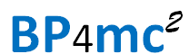

Best Practices for meaningful connected computing
PiLOD praktijkervaringen - betekenisvol verbinden van informatie
- Deze versie:
-
http://www.bp4mc2.org/2014-06-18
- Laatste versie:
-
http://www.bp4mc2.org
- Vorige versie:
-
http://www.bp4mc2.org/2014-06-06
- Auteurs:
- Marco Brattinga; Hans Overbeek; Arjen Santema.
- Bijdragen van:
- Nelleke Aders; Jeroen Baltussen; Erik van Beek; Linda van den Brink; Eric Brouwer; Diederik Dulfer; Erwin Folmer; Paul Hermans; Otto Lange; Art Ligthart; Mariëtte Lokin; Marcel van Mackelenbergh; Harmen Mantel; Marc van Opijnen; Elbert Raadsen; Marcel Reuvers; Jacques Vos.
Deze website gaat over
semantiek, Linked Data, begrippenstelsels en definities. Het
gaat ook over communicatie, elkaar begrijpen en hoe je iets kunt
uitleggen, Iets waar we eigenlijk elk moment van de dag mee
bezig zijn. Enkele voorbeelden zijn afkomstig uit
kinderprogramma’s als Sesamstraat en kinderboeken als “Alice in
Wonderland”. Een ‘Open mind’ die bij jonge kinderen nog aanwezig
is en ‘begrip’ staan voor ons gevoel dan ook dicht bij elkaar.
We willen het belang laten zien van het verbinden van
administratieve en institutionele werkelijkheden met het echte
leven in wat wij de natuurlijke werkelijkheid noemen.
De digitalisering van
onze samenleving maakt het steeds lastiger om met een ‘open
mind’ naar de samenleving te kijken. Op papier (of vastgelegd in
een digitaal systeem), is er geen speelruimte meer en ligt alles
vast. Er bestaat een behoefte en noodzaak om een manier te
vinden om informatie met elkaar te delen op een ‘open’ manier.
Met ‘open’ bedoelen we hier niet per se dat deze informatie vrij
en kosteloos beschikbaar is voor iedereen. Met open informatie
delen bedoelen wij: informatie delen met begrip voor
mogelijke verschillen in context van die informatie. Informatie
delen op een manier die voorkomt dat mensen dogmatisch gaan
handelen naar de verkregen informatie. Op een manier die
natuurlijke werkelijkheid voor administratieve werkelijkheid
laat gaan. Mensen blijven mensen, ook in een digitale
samenleving.
Een recent voorbeeld
is de herziening van kindregelingen. De herziening zorgt ervoor
dat alleenstaande ouders een aanvullende toeslag ontvangen, die
zij voorheen ontvingen via een gemeentelijke regeling. Door een
definitieverschil tussen “partner” bij toeslagen en
“alleenstaande” uit de gemeentelijke regeling ontvangt niet elke
alleenstaande ouder echter deze toeslag [KINDREG].
“Definitiekwestie” klinkt abstract, maar voor de betrokkenen
gaat het om een werkelijke achteruitgang in inkomen.
Bron:
AD, 6 juni 2014, “Bijstandsmoeders raken 240 euro per maand
kwijt”
Met deze website delen wij
onze inzichten en ervaringen die we de afgelopen twee jaar
vanuit het Platform implementatie Linked (Open) Data (PiLOD)
hebben opgedaan. We hopen dat dit leidt tot een levende, open
methode die via delen en toepassen door anderen wordt
aangescherpt en verbeterd en waaraan nieuwe ‘best practices’
worden toegevoegd. Dit doel hebben we verwoord in het acroniem
BP4mc2 (Best Practices for meaningful connected computing).
Daarin komt het delen van ‘best practices’ voor en symboliseert
mc2 het nieuwe paradigma van het delen en
verbinden van betekenis en informatie. De website http://www.bp4mc2.org is het platform dat dit
proces ondersteunt.
Geheel in stijl met
het principe van Linked Data, verbinden we onze inzichten en
ervaringen zoveel mogelijk met andere informatiebronnen die op
het internet beschikbaar zijn: wetenschappelijke publicaties,
andere best-practices, onderzoeken en standaarden.
Deze website is bedoeld
voor informatici en rechtsinformatici, in het bijzonder
informatie-architecten en vakspecialisten die zich bezig houden
met het verbinden van informatiesystemen en het uitwisselen van
informatie.
Wij hopen echter een
bredere doelgroep te interesseren voor het verbinden van de drie
werkelijkheden. Uit de feedback van onze reviewgroep en onze
eigen praktijkervaring halen we dat de ervaringen op deze website
ook relevant kunnen zijn voor juristen, beleidsmedewerkers,
managers en beheerders van registraties. We nodigen iedereen uit
om samen de teksten op de website http://www.bp4mc2.org aan te vullen en relevant
te maken voor deze brede doelgroep.
Inhoudsopgave
1. Inleiding
1.1 Aanleiding
1.1.1 De waarde van
informatie
In onze maatschappij
is de waarde van (goede) informatie altijd belangrijk geweest.
Algemeen geaccepteerd is het principe dat goede
bedrijfsbeslissingen, die ervoor zorgen dat een bedrijf of
instelling haar doelstellingen sneller, beter, goedkoper kan
bereiken, afhankelijk zijn van de toegang tot goede informatie.
De afgelopen jaren is de bewustwording dat informatie van
strategische waarde is voor een organisatie alleen maar
toegenomen. Als gevolg daarvan is de ontwikkeling van infonomics
op gang gekomen: het vakgebied dat (bedrijfs)economie en
informatie bij elkaar brengt [INFONOMICS].
Infonomics kan
bedrijven helpen om te komen tot betere bedrijfsresultaten, door
strategische beslissingen te nemen over het beheer en vergaren
van (goede) informatie. In ‘The economics of information
management’ [ECONIM] worden daarbij de volgende principes
neergezet voor het verbeteren van de informatie in een
organisatie:
- Verbeter de kwaliteit;
- Verbeter de beschikbaarheid;
- Verbeter het gemak waarmee informatie
gebruikt kan worden;
- Innoveer: introduceer nieuwe technologie
(zodat data omgezet kan worden in beter bruikbare informatie);
- Voeg nieuwe of (toegang tot) externe
databronnen toe.
BP4mc2 geeft enkele
best practices om bovenstaande voor elkaar te krijgen.
1.1.2 De waarde van
informatie voor de Nederlandse overheid
Een belangrijke
doelstelling van de overheid is om de overheid transparant te
laten zijn, overheidsinformatie te delen en beschikbare
informatie te (her)gebruiken. Het kabinet heeft haar ambitie op
dit vlak kenbaar gemaakt in het ‘Actieplan open overheid’
[APOO]. In 2011 is in de ‘Aanwijzingen voor de regelgeving’ een
bepaling opgenomen, die het zoveel mogelijk aansluiten op
begrippen in basisregistraties voorschrijft [AANW161]. Door het
hergebruiken van data worden de administratieve lasten voor
burgers en bedrijven verminderd.
Voor de overheid zelf
worden kwaliteitsverbeteringen en kostenbesparingen
gerealiseerd. Als data meer en beter worden gebruikt, komt er
meer terugkoppeling op de kwaliteit en worden minder fouten
gemaakt.
1.1.3 Linked Data
Linked Data lijkt een
bruikbare technologie om (overheids)data direct via het web te
publiceren. In het artikel ‘Een nieuwe wereld, een nieuwe
informatie architectuur’ [RIJNSANT] beschrijven Ria van Rijn en
Arjen Santema de mogelijkheden die linked data bieden. Momenteel
wordt data in het beste geval via webservices, maar vaak ook nog
gewoon als databestand tussen organisaties uitgewisseld.
Dergelijke oplossingen hebben vaak als kenmerk dat ze als
point-to-point-solution zijn gerealiseerd en moeilijk op te
schalen zijn naar breder gebruik. Een belangrijke reden hiervoor
is dat een impliciete context wordt verondersteld waarbinnen de
data bruikbaar is, zonder dat deze context met de data wordt
meegeleverd.
Door data via het web
te publiceren wordt deze in een keer, voor iedereen beschikbaar,
vanuit een herkenbare bron gepubliceerd. Linked data kan
inclusief context worden gepubliceerd. Met context wordt de
uitleg van de betekenis van data en metadata bedoeld. Metadata
gaan bijvoorbeeld over de wijze van inwinning, volledigheid,
betrouwbaarheid, tijdigheid, en herkomst. Linked data biedt de
mogelijkheid om deze metadata in dezelfde vorm te publiceren als
de data zelf.
1.2 Van 20e eeuw
principes naar 21e eeuw principes
In de presentatie van
Christophe Guéret, gehouden op het PiLOD congres op 13 november
2013 [LIKNSP], wordt treffend geschetst hoe het delen van kennis
zich in de afgelopen decennia heeft ontwikkeld door het
internet. Tot 1989 waren documenten de gangbare vorm om
informatie uit te wisselen. Documenten werden op bulletin boards
geplaatst vanwaar je ze kon downloaden. Vervolgens moest je
eerst op zoek naar software om dit te kunnen lezen (bijvoorbeeld
Wordpad of WordPerfect). Via news groups werden nieuwe
documenten en nieuwe versies van documenten bekend gemaakt en
kon je nagaan welke verwijzingen er waren.
Het web heeft danig
verandering gebracht in het kunnen zoeken, vinden en verbinden
van informatie. Informatie wordt steeds meer aangeboden als
webpagina die door elke browser aan de gebruiker kan worden
getoond. Deze webpagina wordt gegenereerd door een applicatie
die de versies beheert en navigatie naar vele andere
gerelateerde informatie geautomatiseerd aanbiedt. Bijvoorbeeld
linkjes naar een pagina over de auteur, andere versies van de
informatie of andere pagina’s over hetzelfde onderwerp. Elke
link bevat een zogenaamde Uniform Resource Identifier (URI) die
iedere pagina een duidelijk adres op het internet geeft,
waarnaar direct kan worden verwezen zodat informatie steeds
nauwkeuriger wordt verbonden.
Maar als het om data
gaat, gaan we nog vaak hetzelfde te werk als dertig jaar geleden
met documenten. Als je een dataset vindt moet je op zoek naar
software om deze in te lezen (meestal een database of
spreadsheet programma). Je moet zelf goed bewaken dat je alle
updates krijgt om de gereproduceerde dataset synchroon te houden
met het origineel. En links naar andere datasets moeten voor
iedere reproductie van een dataset opnieuw worden aangebracht.
Dit klinkt inderdaad wel een beetje ‘jaren negentig’.
Tim Berners Lee stelt
vier eenvoudige principes voor om te hanteren als je data via
het web publiceert [LINKEDDATA]:
- Use URIs as names for things
- Use HTTP URIs so that people can look up
those names.
- When someone looks up an URI, provide
useful information, using the standards (RDF*, SPARQL)
- Include links to other URIs. so that they
can discover more things.
Met deze principes
worden data gepubliceerd ALS webpagina’s in plaats van OP
webpagina’s. Dit is fundamenteel anders dan het ‘jaren
negentig-achtige’ op het web zetten van een databestand en een
welgemeend ‘zoek het verder zelf maar uit!’.
1.3 BP4MC2: Een aanpak
Vanuit het W3C zijn er
standaarden om betekenis vast te leggen en om datamodellen voor
linked data te maken. Zo is SKOS [SKOS] (Simple Knowledge
Organization System) een door het W3C vastgestelde standaard
voor het definiëren van begrippen en hun samenhang in de vorm
van een thesaurus of taxonomie. Voor het definiëren van een
ontologie als basis voor een in RDF te representeren datamodel
is OWL [OWL] (Web Ontology Language) beschikbaar.
Er zijn echter nog
weinig beschreven practices waarin wordt beschreven hoe en in
welke stappen een dataset kan worden omgezet naar een structuur
die maximaal aansluit bij de moderne web standaarden. Deze website
is de neerslag van de eerste praktische ervaringen op dit gebied
in Nederland.
BP4mc2 (in het Engels:
Best Practices for Meaningful Connected Computing) is een
methode om vanuit juridische en andere vakmatige richtlijnen de
betekenis, structuur en dynamiek van een informatiesysteem te
beschrijven. Daarbij wordt gebruik gemaakt van concepten uit de
semantiek en de wereld van Linked Data. BP4mc2 is open. Iedereen
wordt dan ook uitgenodigd om een bijdrage te leveren aan het
verbeteren en optimaliseren van BP4mc2.
1.4 Opbouw van deze website
Hoofdstuk 2 geeft een
overzicht van de belangrijkste elementen in BP4mc2. In de
volgende hoofdstukken worden al deze elementen uitgediept. Dat
gebeurt aan de hand van het raamwerk van Seligman, Wijers en
Sol. In dit raamwerk worden vier aspecten van een methode
onderscheiden [MSISD]:
- Hoofdstuk 3 beschrijft de denkwijze (way
of thinking), het theoretisch kader dat we hebben gebruikt bij
het uitwerken van onze methode;
- Hoofdstuk 4 beschrijft de
modelleringswijze (way of modelling). Dit hoofstuk geeft een
beschrijving van de gebruikte vocabulaires en modellen en de
wijze waarop deze modellen gerepresenteerd kunnen worden;
- Hoofdstuk 5 beschrijft de werkwijze (way
of working). Het geeft practische richtlijnen hoe je BP4mc2 kunt
toepassen;
- Hoofdstuk 6 beschrijft de ondersteuning
(way of supporting), aan de hand van een concrete implementatie
van BP4mc2.
1.5 Schrijfconventies
Dubbele of enkele
aanhalingstekens
Deze website gaat voor een
groot deel over taal en het gebruik van woorden (termen) om
begrippen aan te duiden. We maken dan ook regelmatig onderscheid
tussen een begrip en de term die we gebruiken om dat begrip mee
aan te duiden. Om niet steeds expliciet te hoeven benoemen of we
de term of het begrip bedoelen maken we gebruik van enkele of
dubbele aanhalingstekens.
We gebruiken dubbele
aanhalingstekens om een letterlijke (letter voor letter zo
gespelde) term aan te geven, bijvoorbeeld "Marco Polo"
en soms ook om een letterlijk citaat weer te geven
We gebruiken enkele
aanhalingstekens om aan te geven dat we een begrip gebruiken en
soms ook om aan te geven dat een woord niet letterlijk maar min
of meer figuurlijk wordt gebruikt of om voorbeeldzinnen aan te
geven waar het om de strekking van de zin en niet de letterlijke
formulering van de zin gaat.
Linked Data met of
zonder beginhoofdletters
Als we het over
'Linked Data' als methode hebben, dan gebruiken we hoofdletters.
Hebben we het daarentegen over 'linked data' als een verzameling
gegevens die gelinkt is volgens de Linked Data principes, dan
gebruiken we kleine letters.
(Linked) data:
enkelvoud of meervoud
'Linked Data', de
methode dus, is enkelvoud. Als we 'data' bedoelen als 'een
verzameling gegevens' dan is het ook enkelvoud, maar als we het
bedoelen als 'telbare gegevens' dan meervoud.
2. Overzicht
Dit hoofdstuk schetst de
hoofdlijnen en belangrijkste inzichten van BP4mc2. Voor de lezer
met beperkte tijd biedt het een handige samenvatting van deze website.
De lezer die geïnteresseerd
is in een specifiek onderwerp, kan dit hoofdstuk
gebruiken als kapstok voor de onderwerpen die in de
detailhoofdstukken 3 tot en met 6 worden behandeld.
2.1 Linked Data
‘Linked Data’ is een
techniek waarmee data via het internet worden gepubliceerd.
Daarbij worden dingen in de echte wereld gerepresenteerd door
een uniforme identificatie op het internet. Daarmee kunnen
mensen via het internet informatie over die dingen vinden.
2.2 Drie werkelijkheden
In BP4mc2 gaan we in
op drie verschillende ‘werkelijkheden’. De ‘echte’ wereld noemen
we de “natuurlijke werkelijkheid”: de werkelijkheid waarin
natuurwetten gelden en die we als mensen ’natuurlijk’ vinden. De
informatiesystemen met hun data en applicaties noemen we de
“administratieve werkelijkheid”. En de afspraken die we met
elkaar maken (in wet– en regelgeving, als mondelinge afspraken
of in standaarden) noemen we de “institutionele werkelijkheid”.
In de natuurlijk
werkelijkheid communiceert of abstraheert een persoon (actor)
over een concreet ding. Een actor vormt een gedachte over dat
ding. Op basis van die gedachte verbindt de actor het ding met
een term die dat ding aanduidt. Als actoren elkaar begrijpen
hebben ze bij één dezelfde term (ongeveer) dezelfde gedachte aan
hetzelfde ding. De natuurlijke werkelijkheid is continu in
beweging, er gebeurt van alles, dit zijn levensgebeurtenissen.
In de institutionele
werkelijkheid leggen instituten hun visie (bedoeling) op een
bepaald domein vast. Dingen in de natuurlijke werkelijkheid
worden in de institutionele werkelijkheid geformaliseerd als
feiten. Feiten worden vastgelegd in formele termen die samen een
wet, een standaard of andere institutionele afspraak vormen. Een
levensgebeurtenis in de natuurlijke werkelijkheid wordt
geformaliseerd als één of meerdere institutionele gebeurtenissen
in de institutionele werkelijkheid, bijvoorbeeld in de vorm van
rechtshandelingen.
In de administratieve
werkelijkheid worden deze juridische termen als linked data
geordend in triples. Triples zijn korte zinnen, waarmee een
uitspraak wordt vastgelegd in de vorm van “onderwerp – gezegde –
(lijdend) voorwerp”. Onderwerp en lijdend voorwerp hebben
daarbij een op het internet vindbare naam in de vorm van een
URI. Daardoor wordt het mogelijk data over feiten, dingen en
gebeurtenissen uit een bepaalde bron te verbinden met data uit
andere bronnen. Het is een open structuur, die vaak wordt
benoemd met het ‘triple a’ adagium ‘Anybody can say Anything
about Anything’. Daar hoort dan wel bij dat het belangrijk is om
te zien wat de herkomst is van een uitspraak.
BP4mc2 laat zien hoe
met Linked Data de natuurlijke werkelijkheid verbonden kan
worden met de institutionele werkelijkheid en hoe dit alles
gerepresenteerd kan worden in een administratieve werkelijkheid
waarin data over feiten en gebeurtenissen uit de verschillende
werkelijkheden worden verbonden.
2.3 Samenhang tussen
de drie werkelijkheden
Een levensgebeurtenis
(bijvoorbeeld de geboorte van een kind) is aanleiding voor een
institutionele gebeurtenis (in dit geval bijvoorbeeld het feit
dat het kind een bepaalde nationaliteit heeft). Van een
dergelijk feit kan slechts sprake zijn als voldaan wordt aan
bepaalde voorwaarden.
Om de administratie
van het feit op orde te krijgen, bestaan procesafspraken zodat
een actor in de natuurlijke werkelijkheid ervoor zorgt dat ook
een administratieve gebeurtenis optreedt (in dit geval de
registratie van de geboorte van het kind bij de gemeente). De
administratieve gebeurtenis heeft als eindresultaat dat bepaalde
data wordt vastgelegd, zoals de geboortedatum van het kind, zijn
of haar geslacht en de gegevens van de persoon die aangifte doet
van de geboorte. Er is sprake van een compliant situatie, als de
adminsitratieve vastlegging overeen komt met de situatie die
volgens de regels van de institutionele werkelijkheid zouden
moeten gelden.
2.4 Axiomatisch begrippenstelsel
Om elkaar te kunnen
begrijpen, is het nodig dat je weet wat de begrippen betekenen
die een ander gebruikt. Begrippen hebben een ‘naam’: de term, de
aaneenschakeling van woorden, die je gebruiken als je dit begrip
bedoelt. Omdat je dezelfde naam kunt gebruikt in verschillende
situaties, is het nodig om bij de uitleg van een begrip ook
altijd aan te geven in welke situatie deze term de naam is voor
het begrip dat je wilt uitleggen. Zo’n situatie noemen wij een
“context”.
Om begrippen in
onderlinge samenhang te beschrijven hanteren we een axiomatisch
begrippenstelsel. In een axiomatisch begrippenstelsel wordt
ieder begrip beschreven in termen van een ander begrip. Daarbij
kom je uiteindelijk uit bij enkele begrippen die iedereen in
deze context begrijpt en niet worden uitgelegd. Dit noemen we
axioma’s.
Doel van het
begrippenstelsel is uiteraard om alle begrippen in het model
“begrijpelijk” te maken. Cirkelredenaties, waarbij in de
definitie van een begrip andere begrippen worden gebruikt die –
direct of indirect – weer gebruik maken van het te definiëren
begrip zijn ‘oneerlijk’. Dat geeft geen begrip, maar leidt tot
een eindeloze rondgang.
Een begrippenstelsel
dat op een dergelijke manier is opgebouwd verbindt de uit te
leggen begrippen met de begrippen die iemand al begrijpt. Het
verbindt de argeloze lezer vanuit zijn eigen belevingswereld en
vocabulaire met het domein en de domeinvocabulaire die begrepen
moet worden.
3. Denkwijze
Begrip, in de zin van
elkaar begrijpen staat centraal bij communicatie. Alleen als
mensen elkaar begrijpen kunnen ze met elkaar communiceren en
raken ze verbonden. Hetzelfde geldt voor communicatie tussen
informatiesystemen. Alleen als data in informatiesystemen
begrijpelijk is, kunnen informatiesystemen met elkaar
communiceren en kan hun data worden verbonden.
Dit hoofdstuk
beschrijft de denkwijze vanuit de onderdelen waaruit
communicatie is opgebouwd:
- De symboliek van communicatie (hoe
drukken we ons uit: termen en woorden versus URIs);
- De vorm van communicatie (zinnen en
gesprekken);
- De betekenis van communicatie (waar gaat
het over: feiten, gebeurtenissen, werkelijkheden);
- Het gebruik van communicatie.
3.1 Termen, woorden en
URIs
3.1.1 Begripsdriehoek
Een belangrijk aspect
van communicatie en informatica is het gebruik van symbolen om
te verwijzen naar specifieke objecten. In de
communicatiewetenschap wordt daarbij vaak de ‘triangle of
meaning’ aangehaald.
Dit model is afkomstig
uit de semiotiek en beschrijft hoe symbolen (of ‘termen’)
gebruikt worden door een spreker om te verwijzen naar een
specifiek ‘ding’.
De derde hoek van de
driehoek bestaat uit de gedachte die de spreker had over dit
‘ding’ op het moment dat hij hierover sprak. De spreker heeft
het feitelijk niet over het echte ‘ding’, maar over zijn
gedachte over dit ‘ding’.
3.1.2 Context: spreker
en toehoorder
Een belangrijk aspect
van de begripsdriehoek is het idee dat een term verwijst naar
een ding zoals de spreker dit bedoelt. De toehoorder zal bij het
horen van de mededeling van de spreker altijd zijn eigen
gedachte bij de term hebben, en dus mogelijk een ander ‘ding’ of
ander aspect van dit ‘ding’ voor ogen hebben.

Bovenstaand figuur
geeft een voorbeeld waar een dergelijke spraakverwarring is
afgebeeld. De spreker gebruikt de term “Lange Jan” en heeft
daarbij zijn eigen gedachte over een specifiek gebouw (de Onze
Lieve Vrouwetoren in Amersfoort, Kadastraal middelpunt van
Nederland en in de volksmond ook wel de "Lange Jan"
genoemd). De toehoorder zit met zijn gedachten ergens anders
(namelijk: in de Efteling), en verwacht dat de spreker het over
iets heel anders heeft dan een gebouw.
Begrip ontstaat als er
voldoende overlap is in de gedachten die sprekers en toehoorders
hebben bij eenzelfde term. Dit idee is voor het eerst uitgewerkt
door Peirce, en de consequenties voor de ICT verder door Sowa in
“Ontology, Metadata and Semiotics” [ONTOMETA]. Context is
daarbij cruciaal: verschillende contexten maken dat dezelfde
termen naar andere begrippen verwijzen. Dit verschil in context
wordt mooi geïllustreerd in het sesamstraat tekenfilmpje over
‘grote dingen’ [SS-TAAT].
Het vervelende aan
natuurlijke taal is echter dat in geschreven taal aan de term
niet zichtbaar is wie de spreker is. Bij gesproken taal is dit
anders. Daar is duidelijk wie de woorden uitspreekt, dus ook wie
‘bezitter’ is van de gedachte. Zo kan een gesprek ontstaan,
waarbij de toehoorder aan de ‘bezitter’ vragen stelt over de
gedachte, om zo beter te begrijpen wat de spreker bedoelt. Zie
bijvoorbeeld het sesamstraat filmpje ‘Guess who I met today’
[SS-GWIMT]
In ‘Through the
looking-glass’ van Lewis Caroll wordt deze innige relatie tussen
de betekenis van een term en zijn spreker verwoord in het
gesprek tussen Alice en Humpty-Dumpty:
"I
don't know what you mean by 'glory'", Alice said.
Humpty
Dumpty smiled contemptuously. "Of course you don't. Till I
tell you. I meant 'there's a nice knock-down argument for you!'"
"But
'glory' doesn't mean 'a nice knock-down argument'," Alice
objected.
"When
I use a word," Humpty Dumpty said in rather a scornful
tone. "It means just what I choose it to mean - neither
more or less."
"The
question is," said Alice, "whether you can make words
mean so many different things."
"The
question is," said Humpty Dumpty, "which is to be
master - that's all."
Hier stelt Humpty
Dumpty dat hijzelf, en alleen hijzelf kan bepalen wat een woord
betekent. Strikt genomen heeft hij gelijk. Maar als men
betekenisvol wil communiceren en daarmee ook betekenisvol
modelleren, dan is enige duidelijkheid nodig wat ‘we’ er mee
bedoelen. Deze duidelijkheid kan worden bereikt door het
definiëren van begrippen.
Het belang van de
interpretatie van woorden wordt bijvoorbeeld duidelijk in de
rechtspraak. Een voorbeeld (waarbij bovendien de woorden van
Lewis Caroll worden geciteerd) is de zaak Liversidge versus
Anderson uit 1942 in Engeland [LIVAN]. Daar lag de vraag op
tafel of de woorden van een wet in verschillende situaties
anders uitgelegd mochten worden, ofwel: wie bepaalt in ultimo
wat de betekenis is van de letter van de wet?
Een voorbeeld uit
Nederland is het elektriciteitsarrest [EARREST], waarin een
Haagse tandarts beschuldigd wordt van diefstal van elektriciteit
door de meter te blokkeren met een breinaald. In cassatie
verweert de tandarts zich met de stelling dat elektriciteit niet
als ‘enig goed’ valt te kwalificeren, zodat niet aan de
delictsomschrijving van artikel 310 uit het Wetboek van
strafrecht (diefstal) is voldaan. Hij betwistte het begrip
‘goed’, of in elk geval de toepasselijkheid daarvan op iets
immaterieels als elektriciteit.
Om de betekenis van
symbolen te begrijpen, is het van belang om de afspraken te
kennen waarmee de symbolen zijn gemaakt, of ten minste een
verwijzing te hebben naar een ander symbool waar de afspraak wel
van bekend is. Een voorbeeld van dit laatste is de Rosetta Stone
[ROSETTA].
Het is dus nodig
afspraken te maken over de manier waarop waarnemingen van dingen
en gebeurtenissen in de werkelijkheid worden vertaald naar een
representatie van deze dingen en gebeurtenissen in taal. Die
representatie kan worden geïnterpreteerd, en weer worden
terugvertaald naar de werkelijkheid zoals iemand zich die
voorstelt. Op die manier kan iemand zich een beeld vormen van de
werkelijkheid, ook al heeft hij die niet zelf waargenomen. Vanaf
nu maken we onderscheid tussen de natuurlijke werkelijkheid en
de administratieve werkelijkheid. De natuurlijke werkelijkheid
is de ‘echte’, ‘alledaagse’, ‘brute’ werkelijkheid waarin we
leven. De administratieve werkelijkheid is een representatie van
de natuurlijke werkelijkheid in informatiesystemen.
Tegenwoordig wordt de
meeste informatie vastgelegd in digitale informatiesystemen.
Conceptueel verschilt dit niet wezenlijk van handgeschreven
registraties. Nieuw is wel dat geautomatiseerde
informatiesystemen hun informatie direct met elkaar kunnen
uitwisselen zonder menselijke tussenkomst. Bij uitwisseling
tussen handgeschreven informatiesystemen is er altijd iemand die
het bronsysteem leest, de informatie begrijpt en vervolgens de
informatie in het doelsysteem wijzigt. Afwijkingen tussen de
modellen van de twee systemen worden daarbij door de persoon in
kwestie ‘vertaald’ van het ene naar het andere model.
Tijdens automatische
uitwisseling controleert niemand of de symbolen die in het
bronsysteem zijn gebruikt wel hetzelfde betekenen als in het
doelsysteem. Niemand kan bij een afwijking in betekenis
ingrijpen om te zorgen dat de informatie ‘correct’ wordt
ontvangen in het ontvangende systeem. ‘Correct’ wil hier zeggen
dat het ontvangende systeem de symbolen naar dezelfde
natuurlijke werkelijkheid terugvertaalt als dat het bronsysteem
dat zou doen. Deze controle en eventuele vertaling moet dus in
de koppelvlakken worden opgenomen zodat de automatische
koppeling niet tot fouten leidt waardoor verkeerde conclusies
worden getrokken.
3.1.3 URI-term
We kunnen het model
van de begripsdriehoek ook toepassen op een informatiesysteem.
De term in de driehoek correspondeert dan met een identificatie
in het informatiesysteem, de gedachte correspondeert met een
onderdeel uit het conceptuele model van het systeem en het ding
blijft, net als in natuurlijke taal, het ‘echte’ ding: het is
geen onderdeel van het systeem.
De eerste twee
principes van Linked Data, zoals genoemd in Hoofdstuk 1, geven
een elegante manier om identificaties zo te kiezen dat problemen
met synoniemen en homoniemen zo veel mogelijk worden voorkomen.
Bovendien kunnen de identificaties verwijzen naar hun
‘eigenaar’, wat de mogelijkheid geeft om meer informatie te
verzamelen en zo een beter begrip te krijgen.
1. Use URIs as names
for things.
URI staat voor
“Uniform Resource Identifier”. Een URI is dus iets waarmee je op
een eenduidige manier naar iets verwijst. Of eigenlijk nog
preciezer: het is iets waarmee je een resource op een eenduidige
manier identificeert, waardoor je er naar kunt verwijzen. De URI
heeft hier de rol van ‘term’ uit de begripsdriehoek. De resource
is hier het begrip dat het informatiesysteem (hier de spreker)
heeft van het ding in de natuurlijke werkelijkheid.
2. Use HTTP URIs so
that people can look up those names.
Http-URIs hebben de
vorm van een URL (de L staat voor Locator) en dus kun je ze
‘activeren’. Met een URL kun je informatie ophalen die op een
server beschikbaar wordt gesteld. Een belangrijke bijkomstigheid
is dat een http-URI duidelijk maakt van wie die informatie
afkomstig is: van de eigenaar van het internetdomein van de URI.
De URI verenigt zo de term en (gedachte)eigenaar in een
identifier.
Merk op dat we in dit
plaatje expliciet niet spreken over de ‘BAG gedachte van de
Lange Jan’. Informatiesystemen (zowel geautomatiseerd als
handmatig) zijn deterministisch en hebben geen gedachten, zoals
mensen deze hebben. Daarom spreken wij hier van het
(conceptueel) model dat de BAG heeft van de Lange Jan. Dit wil
overigens nog niet zeggen dat dit model altijd goed beschreven
is! Een slecht gedocumenteerd informatiesysteem kan net zo
ondoorgrondelijk zijn als de gedachten van een mens!
3.1.4 Begrippen in
deze sectie
|
|
Een term
is een
aaneenschakeling van één of meerdere woorden.
|
|
|
Een ding is iets in de natuurlijke
werkelijkheid: een object, mens, machine, etc.
|
|
|
Een naam
is een term die
gebruikt wordt om te verwijzen naar een ding.
|
|
|
Een actor is een mens of IT systeem:
iemand of iets dat een communicatieve handeling kan uitvoeren.
|
|
|
Een gedachte
is het denkbeeld
dat een mens heeft in een bepaalde context over een ding.
|
|
|
Een URI-term is een term waarmee een
resource op een eenduidige manier wordt geïdentificeerd.
|
|
|
Een context
is een begrip
waarbinnen andere begrippen begrepen kunnen worden.
|
|
|
Een begrip
is de
overeengekomen betekenis van een term in een bepaalde context.
|
|
|
Een model
is een
vereenvoudigde representatie van een ding.
|
3.2 Vorm van communicatie
3.2.1 Grammatica
Communicatie in
natuurlijke taal vindt plaats volgens een model dat we de
grammatica van een taal noemen. Eenvoudige uitspraken hebben de
vorm [onderwerp] – [gezegde] – [lijdend voorwerp]. Bijvoorbeeld
in de zin "Paul kent John" is "Paul" het
onderwerp, "kent" het gezegde en "John" het
lijdend voorwerp. Linked Data is gebaseerd op het uitgangspunt
dat we ook met data dergelijke basale uitspraken kunnen doen.
Hiervoor is RDF bedacht, het Resource Description Framework
[RDF]. RDF is een standaard van het World Wide Web Consortium
(W3C), oorspronkelijk ontworpen als een metadata-model, maar
gaandeweg gebruikt als een formaat om gegevens in het algemeen
voor te stellen en uit te wisselen. Uitspraken in RDF volgen een
grammatica die erg veel lijkt op die van natuurlijke taal. Ze
hebben de vorm van een triple: [subject] – [predicate] –
[object].
Met een triple wordt
in feite een ‘korte zin’ uitgedrukt (zie ook ‘Wat is een zin’,
Algemene Nederlandse Spraakkunst [ANS-ZIN]). De drie onderdelen
van de triple, namelijk ‘subject’, ‘predicate’ en ‘object’
corresponderen met onderwerp, gezegde en (lijdend) voorwerp uit
de natuurlijke taal. Een ‘object’ kan weer een ‘subject’ zijn in
een volgende uitspraak, waardoor een netwerk van samenhangende
dingen en uitspraken ontstaat. Grafisch wordt een triple vaak
afgebeeld als een gerichte graaf: twee bolletjes (voorstelling
van subject en object) die met elkaar
verbonden zijn met een pijl die het predicate voorstelt. Als het
object zelf niet gebruikt wordt om verder door te verwijzen
(omdat het geen URI is, maar een vaste waarde, een literal
[LITERAL]), dan wordt vaak in plaats van een bolletje een
rechthoek gebruikt.
Bovenstaand voorbeeld
toont plaatjes in plaats van URIs voor de (menselijke)
leesbaarheid. Dit plaatje zou er als RDF met echte URIs als
volgt uitzien. Voor de leesbaarheid zijn deze URIs met prefixen.
Een prefix is een verkorte weergaven van een http domeinnaam.
Aangezien alleen
ruimte is voor een onderwerp, gezegde en (lijdend) voorwerp, is
er in de korte zin geen mogelijkheid om ook de context uit te
drukken waarbinnen een mededeling als ‘waar’ moet worden
beschouwd. Hiervoor biedt RDF de mogelijkheid van een ‘named
graph’ (in goed Nederlands de "benoemde graaf"). Een
set samenhangende triples vormt samen een ‘named graph’ die zelf
ook weer een URI heeft, en de context van deze triples geeft.
Via de URI van de ‘graph’ kan ook de herkomst van de
mededeling worden
vastgelegd: wie deed de mededeling, wanneer en vanuit welke
gedachte?
3.2.2 Soorten zinnen
naar communicatieve functie
Natuurlijke taal kent
drie soorten zinnen naar communicatieve functie (bron: Algemene
Nederlandse Spraakkunst [ANS]):
- Mededelende
zinnen: een
uiting
van een
bewering, dat wil zeggen: een mededeling;
- Vragende
zinnen: een
verzoek
om een
mededeling, dat wil zeggen: een vraag;
- Bevelende
zinnen: een
opdracht
tot een actie,
dat wil zeggen: een bevel.
De ANS spreekt nog van
een vierde soort zin: de uitroepende zin. Dit is een zin die een
emotie uitdrukt. Zo’n zin eindigt meestal op een uitroepteken.
Daarbij wordt vermeld dat een dergelijke uitroepende zin in
communicatieve functie weer een mededeling, vraag of bevel kan
bevatten. Daarom beschouwen we de uitroepende zin hierna niet
als een afzonderlijke soort zin.
Voor vragende zinnen
is het gebruikelijk om een vraagteken (“?”) aan het einde van de
zin te plaatsen. Voor mededelende zinnen is het gebruikelijk om
een punt (“.”) aan het einde van de zin te plaatsen. Voor
bevelende zinnen bestaat geen eenduidigheid. Verderop gebruiken
we hiervoor een uitroepteken (“!”).
Voorbeelden van deze
drie soorten zinnen zijn:
- "Jan is geboren op 17 maart."
(mededeling)
- "Kun je iets vertellen over Jan?"
(vraag)
- "Vergeet alles wat je over Jan kunt
vertellen!" (bevel)
3.2.3 HTTP (Hypertext
Transfer Protocol)
Het World Wide Web,
dat toegankelijk is via de browser en waar ook Linked Data op is
gebaseerd, volgt het Hypertext Transfer Protocol (http). Dit
protocol [HTTP][PROTOCOLS] is vergelijkbaar met hoe een gesprek
wordt gevoerd tussen twee mensen.
Een http-request komt
overeen met:
- Een vragende
zin, als sprake
is van een verzoek om een mededeling, zonder dat een andere
actie verwacht wordt. De meest gebruikte methode in het geval
van een vragende zin is GET.
- Een bevelende
zin, als sprake
is van een opdracht tot actie (zoals: ‘sla dit op’). De meest
gebruikte methode in het geval van een bevelende zin is PUT,
POST en DELETE. Het gebruik van GET voor een bevelende zin
druist in tegen de principes van het http-protocol.
Een http-response komt
overeen met:
- Een mededelende
zin, als het
antwoord op een vragende zin;
- Een mededelende
zin, als het
antwoord op een bevelende zin. In een dergelijk geval zegt de
mededeling iets over de belofte of het resultaat van de
verzochte actie).
In relatie tot de
publicatie en het raadplegen van linked data gaat het om
vragende en mededelende zinnen en de ‘GET’ http-request methode.
Hiervoor geldt:
- Een vragende
zin komt
overeen met de URL die wordt ingetypt in de browser;
- Een mededelende
zin komt
overeen met de webpagina die vervolgens wordt getoond in de
browser.
3.2.4 De mededelende
zin
Een eenvoudige,
enkelvoudige mededelende zin heeft de vorm:
Onderwerp (subject) -
Gezegde (predikaat) - Voorwerp (object)
Deze vorm is identiek
aan de opzet van een triple in Linked Data:
<subject>
<predicate> <object>
Zo is de zin: "Jan
kent Piet" gelijk aan de Linked Data representatie in
Turtle-syntax [TURTLE]:
In een triple wordt
subject en predicate altijd afgebeeld op een URI. Een object mag
zowel afgebeeld zijn op een URI als op een literal. Een literal
is een stukje tekst, een datum, of een getal.
Dit betekent dat in
een mededelende zin veel woorden (beter gezegd: termen)
vervangen worden door identificerende elementen. Dit helpt om
specifieke, formele uitspraken te doen: het wordt gemakkelijker
om te begrijpen wat er wordt bedoeld, er is geen misverstand.
Vaak wordt hier de term “disambiguation” gebruikt.
De volgende
voorbeelden laten dit zien:
- Marco zei tegen Marco: "Heb je Marco
al gesproken?"
- Marco Polo zei tegen Marco Janssen:
"Heb je Marco Janssen al gesproken?"
- De persoon met BSN 1234 zei tegen de
persoon met BSN 4321: "Heb je de persoon met BSN 8743 al
gesproken?"
De eerste zin kent de
minst specifieke aanduiding voor de drie personen die in de zin
voorkomen. Dit maakt de zin ambigu en dus lastig te begrijpen.
Immers: over welke Marco hebben we het? In de tweede zin worden
de personen al iets specifieker aangeduid. Deze zin klinkt een
stuk formeler, en leest minder prettig, maar is wel beter te
begrijpen. De derde zin kent een zeer specifieke aanduiding. De
derde zin is volstrekt duidelijk en ondubbelzinnig, maar nogal
omslachtig geformuleerd.
3.2.5 De URI (Uniform
Resource Identifier)
In een RDF triple
worden het onderwerp, gezegde en soms ook het (lijdend) voorwerp
geïdentificeerd door middel van URIs. Een URI kan verschillende
vormen hebben. Zie hiervoor de URI specificaties [RFC3986], of
de meer leesbare wikipedia beschrijving [URI].
Voorbeelden van
correcte URI-namen van ‘Marco’, ‘Marco Polo’ en ‘BSN 1234’ zijn:
- urn:term:Marco
- http://bp4mc2.org/voorbeeld/id/persoon/Marco
- urn:uuid:1234
- http://bp4mc2.org/voorbeeld/id/persoon/1234
De oneven URIs zijn
URNs. Dit zijn gewoon namen, zonder dat hiermee ook een
(internet) locatie wordt gegeven (URN = Uniform Resource Name).
De even URI-namen zijn URLs (URL = Uniform Resource Location),
dat wil zeggen namen die gelijktijdig ook een (internet) locatie
aanduiden.
Aangezien een
internetlocatie overeen komt met de URL die wordt ingetypt in de
browser, is een URL hiermee niet alleen een naam, maar
gelijktijdig ook een vragende zin!
- Een URL vertegenwoordigt zowel een
naam (identificatie) als een vraag;
- Een URN
vertegenwoordigt
slechts een naam (identificatie).
3.2.6 De URL (Uniform
Resource Location) als vraag
Een URL kan zowel een
vraag als de naam van ‘iets’ zijn. Het is duidelijk wat wordt
bedoeld met de URL als naam voor ‘iets’, namelijk precies dit
‘iets’:
De url http://bp4mc2.org/voorbeeld/id/persoon/1234 is hier de naam (of
identificatie) van een persoon met de volledige naam “Marco
Polo”, voornaam “Marco” en BSN “1234”.
Ook is duidelijk dat
een URL nooit een mededelende zin kan zijn. Zo'n zin is immers
geen triple. Hij bevat wel een onderwerp, maar geen gezegde of
lijdend voorwerp. In onderstaand voorbeeld is de eerste zin geen
linked data zin, de tweede wel.
<http://bp4mc2.org/voorbeeld/id/persoon/1234>.
<http://bp4mc2.org/voorbeeld/id/persoon/1234>
<http://bp4mc2.org/voorbeeld/def#sprak-met> <http://bp4mc2.org/voorbeeld/id/persoon/8743>.
In de wereld van
Linked Data kan een URL ook worden gebruikt als vraag. Het derde
Linked Data principe stelt: “When someone looks up a URI,
provide useful information” [LINKEDDATA])
In het voorbeeld kan
dit het volgende gesprek opleveren:
Vraag:
‘De persoon met BSN “1234”?’
Antwoord:
‘De persoon met BSN “1234” heet “Marco Polo”, we noemen hem vaak
“Marco”, zijn BSN is “1234” en hij sprak met de persoon met BSN
“8743”’.
Of in Linked Data
(Turtle syntax):

3.2.7 Overige URL
vragen
In de voorgaande
sectie hebben we de URL besproken die zowel een ‘Naam’ was als
een ‘Vraag’. Er zijn echter veel meer vragen denkbaar, en ook
veel meer URLs.
Zo willen we
onderscheid maken tussen de URL-Naam en de URL-Vraag. Elke
URL-Vraag is een URL die geen URL-Naam is.
Om in de vormgeving
een URL-Naam te kunnen onderscheiden van een URL-Vraag stellen
we voor om in de URL een vraagteken op te nemen, gevolgd door
aanvullende informatie met betrekking tot de vraag, dus
bijvoorbeeld:
Deze URL-Vraag komt
overeen met de zin in natuurlijk taal:
'Kun je iets vertellen
over personen met voornaam "Marco"?’
3.2.8 Begrippen in deze sectie
|
|
Een triple
is een combinatie
van ‘onderwerp’, ‘gezegde’ en ‘(lijdend) voorwerp’: [subject,
predicate, object].
|
|
|
Een graph
is een
verzameling van triples.
|
3.3 Betekenis van communicatie
3.3.1 Feiten in de
natuurlijke en institutionele werkelijkheid
Volgens wikipedia is
een feit “een gebeurtenis of omstandigheid waarvan de
werkelijkheid vaststaat, ofwel zintuiglijk kan worden
waargenomen of instrumenteel gemeten”. [FEIT] Het tijdsaspect is
van belang bij het beschouwen van een feit: de werkelijkheid van
een omstandigheid kan vaststaan op één moment in tijd, maar op
een ander moment in tijd juist zijn verdwenen.
Gebeurtenissen zijn
juist nooit op een stilstaand moment te aanschouwen. Een
gebeurtenis stelt feitelijk voor dat de ene omstandigheid
verandert in een andere omstandigheid. Wil een gebeurtenis een
feit zijn, dan moet de werkelijkheid van beide omstandigheden
vaststaan, maar bovendien moet vaststaan dat er een ‘regel’ is
die feitelijk (dus waarvan de werkelijkheid ook vaststaat)
bepaalt dat omstandigheid A wetmatig resulteert in omstandigheid
B. Zie voor een uitleg van wat een regel is: defining business
rules – what are they really [RULES]. In de natuurlijke
werkelijkheid zijn deze regels de natuurwetten. Zo valt een
appel van een boom als de zwaartekracht die op
deze appel wordt uitgeoefend groter is dan de sterkte van de
verbinding tussen de appel en de tak waaraan hij hangt.
De Wikipedia-definitie
van ‘feit’ kent een open eind: Wat staat als werkelijkheid vast?
Van enkele zaken zal iedereen veronderstellen dat deze
‘vaststaan’. Weinig mensen zullen ontkennen dat de brug waarmee
zij een rivier oversteken ‘bestaat’. Zonder de brug zou je
immers vallen (een natuurwet). Andere aspecten die wij mensen
als de ‘vaststaande werkelijkheid’ beschouwen zijn echter niet
natuurlijk en hebben te maken met sociale afspraken: Dat er
zoiets bestaat als de ‘soevereine en democratische rechtsstaat
Nederland’ is een afspraak waar de meeste mensen zich aan
houden, dus daarmee is dat (op dit moment) een feit. Maar in
1500 was de ‘soevereine en democratische rechtsstaat Nederland’
nog geen feit.
Dit laatstgenoemde
feit is een voorbeeld van een institutioneel feit. Een
institutioneel feit is een feit waarvan de werkelijkheid zijn
grondslag heeft in sociale instituties. Hiertoe rekenen we
de overheid die de wet schrijft, deze uitvoert en die
recht spreekt, maar ook standaardisatie-organisaties die
afspraken die mensen maken formeel vastleggen.
Het geheel van deze
sociale instituties en de institutionele feiten die zij
vastgesteld hebben noemen we de institutionele werkelijkheid.
3.3.2 Relatie tussen
natuurlijke en institutionele werkelijkheid
Alles wat de overheid
doet, is gebaseerd op een wettelijke grondslag. Dit is het
zogenoemde legaliteitsbeginsel. De wet en daarop gebaseerde
(gedelegeerde) regelingen omschrijven de begrippen die relevant
zijn binnen het toepassingsgebied van die wet. Ook bepaalt de
wet wat in welke gevallen mag, niet mag of moet met de dingen
die met die begrippen worden aangeduid, en onder welke
voorwaarden.
Om begrip van
wetgeving te krijgen, is het van belang inzicht te hebben in de
gelaagdheid van wetgeving en van de relaties en afhankelijkheden
tussen regelingen. Deze aspecten kunnen de betekenis van een
wettelijk begrip beïnvloeden.
Het recht kent
hiervoor de volgende vier principes:
- Lex
specialis derogat legi generali - specifieke bepalingen gaan voor
algemene bepalingen.
- Lex
superior derogat legi inferiori - hogere wetgeving geeft kaders voor
lagere wetgeving.
- Lex
posterior derogat legi priori/anteriori - jongere wetgeving gaat voor oudere
wetgeving.
- Jurisprudentie
–
rechtsvormende uitspraken. In het bijzonder uitspraken van
rechters in concrete rechtszaken. Jurisprudentie kan invulling
geven aan de betekenis van wetgeving.
Volgens de paradigma's
in de rechtsinformatica (zie [RECHTPARA]) is de wet opgebouwd
uit:
- Begrippen die dingen in de (natuurlijke)
werkelijkheid aanduiden waar de betreffende wet betrekking op
heeft.
- Gebeurtenissen of handelingen die met
betrekking tot de dingen die met deze begrippen worden aangeduid
kunnen plaatsvinden.
- De voorwaarden waaronder
rechtshandelingen mogen worden uitgevoerd en die de
rechtsgevolgen ervan bepalen.
Het bovenstaande
figuur laat de dynamiek zien waarlangs rechtsgevolgen ontstaan
door gebeurtenissen in de natuurlijke werkelijkheid.
Een institutioneel
feit heeft altijd een daaraan voorafgaande aanleiding in de
natuurlijke werkelijkheid. Voorbeelden zijn een geboorte die
aanleiding is voor het opstellen van een geboorteakte, de
oprichting van een organisatie die aanleiding is voor het
opstellen van een oprichtingsakte en de verkoop van een huis die
aanleiding is voor het opstellen van een akte van
eigendomsoverdracht.
Zo’n feit heeft altijd
een rechtsgevolg, dat wil zeggen het leidt tot een rechtsfeit.
Na de verwerking van een geboorteakte in het bevolkingsarchief
bestaat een kind juridisch, na de verwerking van een
oprichtingsakte door de Kamer van Koophandel kan een organisatie
rechtshandelingen uitvoeren en na de verwerking van de
overdrachtsakte door het Kadaster is iemand pas formeel eigenaar
van het huis.
Aanleiding, voorwaarde
en eindsituatie kunnen worden beschreven in de vorm van regels.
De aanleiding geeft aan ‘wanneer’ de gebeurtenis optreedt (wat
de ‘trigger’ is), de voorwaarde geeft aan of de gebeurtenis ook
mag optreden. De eindsituatie is de situatie die geldt na afloop
van de gebeurtenis.
3.3.3 Administratieve
werkelijkheid
De institutionele (en
daarmee ook de juridische) werkelijkheid is niet waar te nemen.
Het is als een mondelinge afspraak: achteraf kun je alleen nog
via menselijke en ‘stille’ getuigen (akten e.d.) achterhalen wat
de institutionele feiten zouden moeten zijn.
Registreren van
juridische feiten in een administratie is dan ook noodzakelijk
voor een goede verstandhouding tussen mensen, en in het
bijzonder: voor een goede rechtsorde. Het figuur op de vorige
pagina laat zien hoe dit proces in zijn werk gaat:
- Een bepaalde levensgebeurtenis heeft,
volgens de institutionele afspraken, rechtsgevolgen.
- Om deze rechtsgevolgen te kunnen
registreren, zal een actor (die daartoe in deze specifieke
situatie bevoegd is, zoals bijvoorbeeld een notaris) de
levensgebeurtenis registreren ("waarvan akte").
- De actor zorgt (direct of indirect) voor
het opvoeren van de gegevens met betrekking tot de
levensgebeurtenis. Dit opvoeren is feitelijk ook weer een
gebeurtenis, nu in de administratie.
Er is sprake van
compliancy als de procesafspraken leiden tot geregistreerde
gegevens die een correcte weergave zijn van de rechtsfeiten.
3.3.4 Begrippen in
deze sectie
|
|
Een feit is een
gebeurtenis of omstandigheid waarvan de
werkelijkheid
vaststaat.
|
|
|
Een natuurlijk feit is
een feit dat werkelijkheid is in de natuurlijke werkelijkheid.
|
|
|
Een gegeven is een
administratief feit dat als zodanig is
geregistreerd in een
informatiesysteem.
|
|
|
Een institutioneel feit
is een feit dat werkelijkheid is conform een stelsel van afspraken
(die zijn opgesteld door een instituut).
|
|
|
Een regel beschrijft hoe
feitelijke situaties zich ten opzichte van elkaar verhouden
|
|
|
Een levensgebeurtenis is
een gebeurtenis in de natuurlijke
werkelijkheid, in ‘het
leven van een mens’.
|
|
|
Een administratieve
gebeurtenis is een gebeurtenis in een IT
systeem (zoals het
toevoegen van data).
|
|
|
Een institutionele
gebeurtenis is een gebeurtenis die plaatsvindt in de
institutionele werkelijkheid.
|
|
|
De werkelijkheid is
datgene dat iemand voor waar aanneemt.
|
|
|
De natuurlijke
werkelijkheid is de werkelijkheid waarin wij leven, waarin
natuurwetten gelden.
|
|
|
Een administratieve
werkelijkheid is een representatie van de natuurlijke
werkelijkheid in een informatie systeem.
|
|
|
Een institutionele
werkelijkheid is een werkelijkheid volgens
algemeen
aanvaarde afspraken.
|
|

|
Een juridische
werkelijkheid is een institutionele werkelijkheid waarin de wet-
en regelgeving geldt.
|
3.4 Gebruik
We kunnen natuurlijk
proberen een deel van de natuurlijke werkelijkheid zelf vast te
leggen om deze veilig te stellen, zodat die werkelijkheid op een
later tijdstip, door onszelf of door anderen, opnieuw opgeroepen
of gereconstrueerd kan worden. Dit doen we bijvoorbeeld bij het
verzamelen van vlinders of postzegels, of bewijsstukken in een
rechtszaak. De veilig gestelde objecten kunnen, mits goed
bewaard, later aantonen hoe de werkelijkheid was op het moment van vastleggen.
Maar er gaat altijd informatie verloren. De vlinder wordt gedood
en opgeprikt, de postzegel wordt van een envelop gehaald en wie
garandeert dat het pistool na de moord niet door een ander is
aangeraakt?
Het lukt dus nooit om
de hele context van een natuurlijke situatie, zoals die op dat
moment en op die plaats geldt, te vangen. Het is in veel
gevallen praktischer om een representatie van de relevante
aspecten van de werkelijkheid vast te leggen. Dit kan in een
realistische representatie zoals een afbeelding, een foto, een
film of een geluidsopname. Maar meestal wordt informatie
vastgelegd in symbolen of in tekst. Meer abstracte begrippen
zoals prijs, gewicht en productiedatum kunnen alleen maar op die
manier worden vastgelegd.
3.4.1 Begrippen
In de voorgaande
paragraaf hebben we het over concrete zaken gehad: een geboorte,
een gebouw, een registratie van gegevens. Om de betekenis van
deze zaken te kunnen beschrijven, is het noodzakelijk om een
abstractie te introduceren: de abstractie van ‘begrippen’.
Een ‘begrip’ is de
abstractie van een ‘ding’ in de natuurlijke werkelijkheid. Een
begrip wordt aangeduid met minimaal één voorkeurs-term. Ook hier
kunnen we de begripsdriehoek gebruiken. Alleen gaat het in dit
geval niet om een gedachte, maar om een afspraak over wat het
begrip zou moeten betekenen. Het onderstaande figuur geeft de
driehoek weer voor het begrip "Pand" uit de BAG.
Het ‘ding’ aan de
rechterkant is in dit geval geen concreet ‘ding’, maar een
abstractie: een ‘pand’ zoals bedoeld in de BAG. Het wolkje
bovenin betreft de afspraak over de betekenis van een ‘Pand’.
3.4.2 Formalisering in
een axiomatisch begrippenstelsel
Een begrip is te
identificeren door een term te verbinden met een context.
Hiermee is duidelijk wanneer twee begrippen dezelfde betekenis
hebben (term+context is gelijk), of wanneer twee begrippen van
elkaar verschillen (term+context is anders).
Dit geeft nog geen
duiding aan de betekenis van het begrip. Daarvoor is het
noodzakelijk om begrippen met elkaar te verbinden op een manier
waardoor de betekenis verder wordt geduid. Hiervoor biedt het
vakgebied van de semantiek aanknopingspunten. In dit vakgebied
is het gebruikelijk om ‘description logic’ toe te passen voor
het beschrijven van de betekenis van begrippen. Het idee
hierachter is dat betekenis uitgedrukt kan worden in
classificaties. Elk begrip is dan een classificatie van concrete
voorkomens. De verzameling van alle potentiële voorkomens
waarvan gezegd kan worden: “Dit is er zo 1”, wordt de extensie
van een dergelijke classificatie genoemd. Twee begrippen hebben
vervolgens dezelfde betekenis is als de bijbehorende extensies
precies dezelfde elementen bevatten.
Een begrippenmodel kan
qua diepgang beperkt zijn of juist heel diep gaan:
- Het model kan zich beperken tot een
opsomming van termen met een uitleg, zonder enig verband tussen
de termen. Dit leidt tot een woordenlijst.
- Een taxonomie is een model van begrippen,
waarin wordt aangegeven welke begrippen een ruimere betekenis
hebben dan een ander begrip.
- Een thesaurus gaat een stapje verder.
Naast hiërarchische relaties tussen begrippen kent een thesaurus
ook andere relaties zoals ‘heeft relatie met’.
- Aanvullend op de thesaurus zijn ook
deel-geheel relaties denkbaar.
- Een volledige description logic kent alle
rijkdom van eerste orde predicatenlogica.
Voor het rechtlijnig
kunnen redeneren op basis van een begrippenstelsel is een
begrippenmodel nodig dat een stapje verder gaat dan een
thesaurus. Het doel is niet zoals bij taxonomieën en thesauri om
woorden ten opzichte van elkaar te ordenen, maar om een
begrippenstelsel te definiëren waarmee je kunt redeneren over
begrippen. Hiervoor is het axiomatisch begrippenstelsel bedoeld.
Dit stelsel heeft de volgende eigenschappen:
- Begrippen worden gedefinieerd in termen
van andere begrippen.
- Elke (betekenisvolle) relatie tussen twee
begrippen heeft een richting: van het begrip (A) dat voor zijn
betekenis afhankelijk is van het begrip (B).
- Een begrip is voor zijn betekenis
afhankelijk van een ander begrip, als dit begrip wordt gebruikt
in de definitie.
- Als begrip (A) afhankelijk is van begrip
(B), dan betekent dit ook dat begrip (A) pas te begrijpen is,
als begrip (B) wordt begrepen.
- Alle betekenisvolle relaties zijn
asymmetrisch. Dat betekent dat als A->B, dan mag niet gelden:
B->A.
- Alle betekenisvolle relaties zijn
transitief. Dat betekent dat als A->B en B->C, dan geldt
ook A->B->C.
- Er mogen geen circulaire relaties
ontstaan. Dat betekent dat niet mag gelden: A->B->C->A.
- Het axiomatisch begrippenstelsel kent
uiteindelijk ‘axioma's’: begrippen die niet verder worden
gedefinieerd in termen van andere begrippen. Er wordt
verondersteld dat de beoogde toehoorder deze begrippen al
begrijpt.
Optimaal is als de
axioma's begrippen zijn die als ‘eenvoudig’ worden gekenmerkt,
zie hiervoor: woordenlijst taalniveau B1 [EENVWOORD].
3.4.3 Natuurlijke
werkelijkheid versus data
Met een axiomatisch
begrippenstelsel kan de institutionele werkelijkheid min of meer
geformaliseerd worden beschreven. Dit is echter nog geen model
in de zin van een volledig uitgewerkte ontologie waarin data
over de dingen in de natuurlijke werkelijkheid die met deze
begrippen worden aangeduid kunnen worden gerepresenteerd. De Wet
Basisregistraties Adressen en Gebouwen (BAG) geeft definities
voor de begrippen ‘openbare ruimte’, ‘nummeraanduiding’ en
‘woonplaats’. Deze definities kunnen worden gerepresenteerd in
een samenhangend axiomatisch begrippenstelsel. Dat geeft
inzicht, maar is nog niet voldoende voor het ontwerpen van een
informatiesysteem waarin data over de ‘dingen’ die met de termen
“openbare ruimte”, “nummeraanduiding” en “woonplaats” worden
aangeduid, kunnen worden opslagen.
Zo kan in de BAG bij
een ‘nummeraanduiding’ worden gedefinieerd dat deze ‘is
gerelateerd aan’ een ‘openbare ruimte’ en dat een ‘openbare
ruimte’ is ‘gerelateerd aan’ een ‘woonplaats’. Voor een
ontologie is veel meer nuance nodig. Bijvoorbeeld ‘in 1 openbare
ruimte mag een nummeraanduiding maar 1 keer voorkomen’.
Wat daarbij soms uit
het oog wordt verloren, is het feit dat het om een registratie
gaat, dus om de administratieve werkelijkheid, en niet om de
‘echte’, natuurlijke werkelijkheid. Een registratie bevat alleen
maar data die iets veronderstellen over de natuurlijke
werkelijkheid. Het bevat niet de natuurlijke werkelijkheid zelf:
een klantenregistratie bevat geen ‘klanten’, maar ‘data over
klanten’. En zelfs een registratie van artikelprijzen bevat geen
‘artikelprijzen’, maar slechts ‘data over artikelprijzen’.
Als het onderscheid
tussen natuurlijke en administratieve werkelijkheid uit het oog
wordt verloren, kan dat leiden tot Kafkaëske-toestanden: ‘Ik bel
u, omdat ik een aanmaning heb ontvangen dat ik mijn
telefoonabonnement niet zou hebben betaald, maar ik ben helemaal
geen klant van u’. Reactie: ‘Dat klopt, u staat niet in ons
computersysteem. U hoeft niet te betalen’. Vervolg: ‘Maar er
staat nu wel een deurwaarder mijn huis leeg te halen!!’.
Reactie: ‘Dat kan niet,
u bent geen klant
volgens ons computersysteem’. Hier wordt de natuurlijke
werkelijkheid ontkend, en de administratieve werkelijkheid als
de ware verondersteld. (meer voorbeelden op bijvoorbeeld "Computer
says no" [COMPSAYSNO]).
Als sketch in een
humoristisch programma zal iedereen dit herkennen en er om
lachen, maar er zijn ook schrijnende gevallen waarbij mensen hun
uitkering of toeslagen verliezen omdat de administratieve
werkelijkheid voor de waarheid wordt gehouden. Aan de andere
kant wordt ook misbruik gemaakt van de soms gebrekkige koppeling
tussen data in administratieve werkelijkheden, bijvoorbeeld bij
B.V. fraudes.
3.4.4 Context van data
Een informatiesysteem
bevat data. Wij gebruiken in dit document het begrip ‘data’ als
synoniem voor ‘gegevens’. Data zijn de vastgelegde uitdrukking
van 1 of meerdere feiten (zie ook [GEGEVEN]). Die feiten kunnen
afkomstig zijn uit verschillende werkelijkheden:
Het kunnen feiten uit
de natuurlijke werkelijkheid zijn die zijn waargenomen door een
sensor of een persoon. Deze heeft de relevante aspecten van die
waarneming ingevoerd in het informatiesysteem dat deze aspecten
vervolgens als data heeft vastgelegd.
Het kunnen feiten uit
een (andere) administratieve werkelijkheid zijn waarover de data
via een automatisch koppeling het informatiesysteem binnenkomen.
Het kunnen feiten uit
een institutionele werkelijkheid zijn, ingevoerd door mensen en
bepaald op basis van (reken)regels.
Data vormen een
discrete representatie van het waargenomen continuüm. Het
betreft een waarneming van de voortdurend veranderende
werkelijkheid, die op enig moment volgens een bepaald model (dat
wil zeggen: een vereenvoudiging van de werkelijkheid die past
bij de gewenste context) wordt vastgelegd.
Het is onmogelijk om
een situatie in de natuurlijke werkelijkheid in zijn geheel vast
te leggen. We leggen enkel vast wat we vooraf relevant achten
voor kwesties waarvan we vermoeden dat die zich in een bepaalde
context voor kunnen doen. Wat achteraf als relevant wordt
beschouwd kon vooraf
vaak niet voorzien of
waargenomen worden. Iedere natuurlijke situatie of gebeurtenis
kent een oneindig aantal eigenschappen, die niet allemaal
waargenomen en vastgelegd kunnen worden.
Twee waarnemingen van
dezelfde werkelijkheid maar op verschillende momenten, of op
hetzelfde moment maar volgens verschillende modellen, kunnen dus
leiden tot verschillende data. Het model specificeert welke
aspecten van de werkelijkheid worden vastgelegd en bepaalt
daarmee de context waarin de data gebruikt kunnen worden.
Vrijwel elke moderne
modelleerwijze maakt onderscheid tussen representaties van
dingen en representaties van relaties tussen die dingen. Dingen
zijn concreet en tastbaar (een persoon, een gebouw, een
voertuig), of abstract (een organisatie, een typering, een
kleur). Met relaties worden dingen met elkaar verbonden.
Elke specificatie gaat
uit van reeds aanwezige kennis bij degene die de specificatie
leest en toepast. Hoe uitgebreider en nauwkeuriger de
specificatie, hoe beter gebruikers begrijpen hoe zij hun
waarnemingen moeten vertalen naar data. Andersom helpt dit
gebruikers om data te interpreteren, dat wil zeggen terug te
vertalen naar de werkelijkheid die door de data wordt
gerepresenteerd.
Een basisregistratie
(bijvoorbeeld de kadastrale registratie) bevat een
administratieve werkelijkheid die een afspiegeling is van de
natuurlijke werkelijkheid, maar slechts voor zover die is
vastgelegd in de institutionele werkelijkheid. We illustreren
dit aan de hand van het voorbeeld ‘het kopen van een huis’.
Het kopen van een huis
is typisch een ‘levensgebeurtenis’ in de natuurlijke
werkelijkheid.
Daarvoor worden
juridisch meerdere dingen vastgelegd, zoals de aflossing van de
hypotheek door de vorige eigenaar, het vestigen van een nieuwe
hypotheek en de overdracht. Dit zijn verschillende
institutionele feiten die stuk voor stuk als zodanig in akten
worden vastgelegd door een notaris.
Deze institutionele
feiten leiden tot een bijwerking van de Kadastrale registratie.
Zo bekeken is een
basisregistratiehouder eigenlijk een tweedelijns organisatie. De
betrokkenen in de natuurlijke werkelijkheid gaan naar een loket
om hun zaken institutioneel te regelen. Bij een
vastgoedtransactie is dit een notaris die de transactie als
institutionele gebeurtenis vastlegt in een akte (‘waarvan
akte’), bij een geboorte is dit een ambtenaar van de burgerlijke
stand die een geboorteakte opstelt.
De notaris schrijft
deze akte in en de basisregistratie verwerkt de in de akte
opgetekende gegevens over de institutionele feiten in de
registratie. Daarbij hanteert de houder een basispatroon dat bij
iedere basisregistratie wordt gebruikt:
- Een basisregistratie wordt altijd
bijgewerkt op basis van een brondocument met een institutionele
status. Bij het Kadaster zijn dat meestal notariële akten, maar
het kan ook een beschikking van een publiekrechtelijke
organisatie zijn. Voorbeelden van akten uit andere
basisregistraties zijn een oprichtingsakte van een bedrijf of
een geboorteakte van een persoon. Voorbeeld van een beschikking
vind je in de Basis Registratie Inkomen (BRI): het authentieke
inkomensgegevens wordt (onder andere) bepaald op basis van de
opgelegde aanslag Inkomstenbelasting.
- In dit brondocument zijn één of meer
institutionele feiten opgetekend.
- Er is altijd een aanleiding in de
natuurlijke werkelijkheid om een specifiek brondocument met de
betreffende institutionele feiten op te stellen.
- De institutionele feiten worden verwerkt
in de registratie. Daarbij is sprake van een was-situatie (vóór
de verwerking van het feit) en een wordt-situatie (ná de
verwerking van het feit). De laatste geeft de nieuwe actuele
institutionele situatie aan.
- Wijzigingen in de registratie zijn al dan
niet relevant voor ketenpartners die informatie afnemen. Zo zal
een gemeente voor wat betreft de basisregistratie Kadaster
geïnteresseerd zijn in ‘overdracht van eigendom’ om de WOZ
aanslag naar het goede adres te kunnen sturen, maar niet in
‘inschrijving hypotheek’.
Een ander voorbeeld
van een situatie waarin duidelijk is dat de data niet de
natuurlijke werkelijkheid zijn is een kadastrale grens die in
een kaart is getekend. Als een lijn op de kaart wordt vergroot
naar ware grootte kan deze wel een meter breed worden. De meeste
conflicten over een erfgrens gaan over minder. Bij zo’n
conflict, dat regelmatig is te zien in het Nederlandse
televisieprogramma ‘De rijdende rechter’, gaat een rechter in de
regel samen met een landmeter naar de betreffende locatie zodat
hij kan beoordelen hoe de natuurlijke werkelijkheid is. De
rechter baseert zijn uitspraak op zijn beeld van deze
werkelijkheid.
Om data te kunnen
beoordelen is altijd informatie nodig over hoe, waar en wanneer
deze zijn ingewonnen. Voor het verkrijgen van huurtoeslag is het
niet voldoende ergens te wonen waar je recht hebt op die
toeslag. De verhuizing moet op tijd (niet na bijvoorbeeld een
aantal jaren) worden gemeld aan de houder van de Basis
Registratie Personen (BRP) op basis waarvan die toeslag wordt
toegekend. De administratieve werkelijkheid moet kloppen met de
natuurlijke werkelijkheid om het institutionele feit te creëren
(of zelfs: we maken de administratieve werkelijkheid leidend bij
het creëren van het institutionele feit).
3.4.5 Correcties
Een bijzonder patroon
vormen correcties in de administratieve werkelijkheid. Ten
opzichte van het basispatroon zijn er vooral enkele
nuanceverschillen:
- Het brondocument is een intern stuk dat
is opgesteld door iemand die daartoe bevoegd is.
- De aanleiding zit niet in de natuurlijke
werkelijkheid en ook niet in de institutionele werkelijkheid.
Aanleiding is de constatering dat de administratie niet in
overeenstemming is met de natuurlijke of institutionele
situatie.
- In het administratieve werkelijkheid is
nog steeds sprake van een was-wordt transformatie.
- Deze wijziging is wel degelijk relevant
voor afnemers die hun processen baseren op de informatie uit die
administratieve werkelijkheid. Daarmee is het ook relevant om
niet alleen vast te leggen dat het een correctie betreft, maar
ook welke informatie is gecorrigeerd. Dit kan er bijvoorbeeld
toe leiden dat een aanvankelijk geweigerde toeslag alsnog wordt
toegekend.
4. Modelleerwijze
In dit hoofdstuk
beschrijven we:
- Een URI strategie in de vorm van een
model dat de symboliek en de vorm van communicatie via het web
over dingen in de natuurlijke werkelijkheid ondersteunt.
- Een model dat de betekenis van
communicatie in de institutionele werkelijkheid ondersteunt. In
dit model wordt de institutionele werkelijkheid vertaald naar
een axiomatisch begrippenstelsel.
- Een model dat het gebruik van
communicatie in de administratieve werkelijkheid ondersteunt. In
dit model wordt de institutionele werkelijkheid zoals beschreven
in een axiomatisch begrippenstelsel vertaald naar een datamodel.
4.1 De URI-strategie
Deze paragraaf
beschrijft een voorstel voor een Nederlandse URI-strategie. De
tekst is voor het grootste deel ontleend aan “Aanzet tot een
nationale URI-Strategie voor Linked Data van de Nederlandse
overheid” dat in het vorig jaar van de PiLOD is geschreven.
[URISTRAT]. De URI-strategie beschrijft een aantal principes
voor het opstellen van een patroon (syntax) van de URIs waarmee
je de data in je informatiesysteem als betrouwbare en
toegankelijke linked data kunt publiceren op het web.
4.1.1 Scope
De URI-strategie richt
zich met name op data waarmee objecten of concepten worden
gedefinieerd, waar andere toepassingen naar kunnen verwijzen.
Data waar niet naar wordt gelinkt valt buiten de scope. Om dit
toe te lichten onderscheiden we drie categorieën
informatiesystemen:
- Online specificaties van Standaarden
- Authentieke registraties
- ‘gewone’ Applicaties
Elk met de nadruk op
een van de volgende drie categorieën ‘data’:
- Referentiemodellen
- Referentieobjecten
- ‘gewone’ Data
De belangrijkste
functie van een Standaard is gewoonlijk om een conceptueel model
te definiëren. Authentieke registraties worden doorgaans opgezet
om een administratie van Referentieobjecten bij te houden en
onder een 'gewone' Applicatie verstaan we een informatiesysteem
dat slechts Data verzamelt voor één specifiek doel.
In alle drie de
categorieën van informatiesystemen komen alle drie de
categorieën data voor, maar niet in gelijke mate.
De grootte van een cel
in het diagram geeft een indicatie van het gewicht van de
betreffende categorie concepten in die categorie van
informatiesystemen.
Op de diagonaal van
linksboven naar rechtsonder staan de belangrijkste categorieën
data per categorie systeem (a1, b2, c3).
Uiteraard kunnen een
Authentieke registratie en een Applicatie een eigen Model hebben
(b1 en c1), sommige Standaarden verstrekken een lijst met
Referentiewaarden (a2) en Applicaties kunnen lokale
Referentiegegevens hebben (c2). Ook kunnen Standaarden en
Registers wat 'gewone' data nodig hebben (a3 en b3),
bijvoorbeeld om wijzigingen en herkomst van hun
referentiegegevens vast te leggen.
De URI-strategie
ondersteunt het hergebruik van Concepten en Referentieobjecten
door andere data-collecties. De interessante categorieën zijn
dan ook de termen in de Modellen en de Referentiegegevens.
|
Termen, zoals klassen
en eigenschappen, die zijn gedefinieerd in de Modellen van een
Standaard of een Authentieke registratie, worden gebruikt om
Referentieobjecten en Data te classificeren. |
|
Referentieobjecten,
gedefinieerd door Standaarden (denk aan waardenlijsten), maar
vooral die beheerd worden in Authentieke registraties, worden
gebruikt in ‘gewone’ Applicaties. |
|
De URI-strategie is
bedoeld voor Modellen en Referentieobjecten van zowel
Standaarden als Authentieke registraties. Dus niet in eerste
instantie voor de ‘gewone’ Data (rij 3) of concepten in ‘gewone’
Applicaties (kolom c) aangezien daar nou eenmaal niet of
nauwelijks naar wordt gelinkt. |
4.1.2 URI-strategie
best-practices
Gedurende de PiLOD
heeft de Werkgroep URI-strategie een aantal inzichten opgedaan
bij de analyse van de voorgestelde varianten.
No register, no
identifier
In Linked Data theorie
wordt nogal eens beweerd dat het nodig is om voor elk concept of
object een URI te definiëren, waardoor het lijkt alsof je pas
kunt beginnen als je voor elk concept of object een nieuwe
Linked Data URI hebt verzonnen en 'gemunt' (to mint a URI). Maar
waarom zou je alles opnieuw definiëren? De mensheid definieert
al eeuwen lang authentieke identificatie voor standaard
begrippen en referentieobjecten. Denk aan encyclopedieën,
taxonomieën en registraties van inwoners of van onroerende
goederen. We noemen hier een voorziening voor het authentiek
definiëren en identificeren van concepten of referentieobjecten
een register. Onder register verstaan we hier dus zowel een
specificatie van begrippen/concepten in een standaard, als een
authentieke registratie van referentieobjecten. (De oplettende
lezer merkt op dat ook een authentieke registratie van alle wet-
en regelgeving onder deze definitie van een register valt.)
Doel van deze niet
geringe inspanning om registers op te zetten is, om vanuit
verschillende administraties op een eenduidige manier met
afgesproken termen (een identifier) naar nauwkeurige en meer
uitgebreide definities van abstracte begrippen en objecten te
kunnen verwijzen zodat iedereen weet wat bedoeld wordt. Door het
gebruik in informatiesystemen van dezelfde standaard termen voor
de concepten in een model en de identifiers van
referentieobjecten uit een register kunnen we op efficiënte
wijze verschillende informatiesystemen met elkaar verbinden.
Zoals hiervoor reeds
gezegd: dat doen we al eeuwenlang handmatig en op papier. Nu we
dat willen gaan automatiseren is er weinig op tegen om deze
bestaande registers te blijven gebruiken. Maar wat nou, als we
naar begrippen of objecten willen verwijzen waar nog geen
register voor bestaat? De enige manier om voor ontbrekende
begrippen en objecten een URI te munten is toch door deze vast
te leggen in een nieuw register. Als we merken dat er voor
bepaalde begrippen of objecten geen register bestaat, terwijl we
hier wel URIs voor willen hebben, dan is de enige manier om een
register aan te leggen.
Kortom: je kunt alleen
URIs munten voor begrippen of objecten die vastliggen in een
register. Dit belangrijke inzicht vatten we samen in het
adagium: 'No register, No identifier'.
Het register bepaalt
Een URI ‘hoort’ bij de
registratie die oorspronkelijk de URI heeft gemunt. Maar niet
alleen de identificatie en de registratie zijn met elkaar
verbonden, ook de betekenis van de URI is verbonden met het
register (de standaard of de authentieke registratie). Bij
twijfel over de betekenis van een URI is het register de eerste
bron van definitie. Daarom is het ‘good practice’ om de naam van
het register op te nemen in de URI en het register zo in te
richten dat het op basis van de URI een definitie kan leveren
van het ding dat met de URI wordt aangeduid.
Het register is zo
betrouwbaar als zijn eigenaar
De huidige eigenaar
van de registratie bepaalt wat de URI inhoudt. Voor het
vertrouwen in de kwaliteit van de data is het is dan ook
belangrijk dat je (op betrouwbare wijze) de eigenaar van een
register kunt achterhalen. Op het web houden TLD-registrars bij
wie de eigenaar van een domeinnaam en dus van dat domein is
[DOMNAAM]. Voor het Top Level Domain .nl is dit SIDN [SIDN]. Op
die manier is duidelijk wie de ‘eigenaar’ is van deze URI, en
daarmee van de betekenis en de identificatie.
Hergebruik zonder
register
Bovenstaande
opmerkingen lijken te suggereren dat het altijd noodzakelijk is
om http-URIs te maken die zich houden aan de URI-strategie en
vanuit een register worden gemunt. Dat is echter niet het geval.
Alternatieven die ook voorkomen zijn het gebruik van URNs
(Uniform Resource Names) of van UUIDs (Universally Unique
Identifier).
URNs zijn uniforme
namen die geen internetdomein bevatten en dus niet gekoppeld
zijn aan een specifiek domein en dus aan een specifieke
uitgever. Het gebruik van URNs is aan te bevelen als meerdere
partijen URIs moeten kunnen munten, maar onderling toch willen
kunnen vaststellen dat ze dezelfde ‘dingen’ identificeren.
Voorbeelden hiervan zijn de European Case Law Identifier (ECLI)
en de Nederlandse Juriconnect standaarden.
ECLI is een unieke
codering om Europese gerechtelijke uitspraken te kunnen
identificeren [ECLI]. Elk land bepaalt zelf hoe dit nationaal
georganiseerd wordt. In Nederland publiceert de Raad voor de
Rechtspraak (RvdR) een selectie van interessante rechterlijke
uitspraken op rechtspraak.nl en voorziet deze van een ECLI-code.
Echter niet alle uitspraken worden door de RvdR gepubliceerd.
Uitgevers van juridische vakbladen publiceren soms ook
uitspraken die niet door de RvdR zijn gepubliceerd. Ook deze
krijgen een ECLI-code. Publiceer je een uitspraak die al een
ECLI nummer heeft, dan dien je dat nummer te gebruiken. Het
voordeel van de ECLI-standaard is dat deze Europa-breed wordt
gebruikt. Ook de Juriconnectstandaarden [JURICON] zijn opgezet
om uniformiteit te brengen in de verwijzing naar wet- en
regelgeving in publicaties door verschillende partijen. In
dergelijke gevallen is het voorlopig nog eenvoudiger om in het
patroon voor de identifiers geen http-domein op te nemen.
Het gebruik van een
UUID is aan te bevelen als het gaat om data waarvan niet
verwacht wordt dat deze buiten de applicatie wordt gebruikt.
Mocht op een later
moment alsnog de behoefte ontstaan aan een Linked Data URI, dan
kan in beide gevallen de URN of UUID omgezet worden naar een URL
door simpelweg het domein van een register voor de URN of UUID
te plaatsen.
4.1.3 Uitgangspunten
Bij het opstellen van
de nationale URI-strategie hebben we de volgende uitgangspunten
gehanteerd (in deze volgorde):
Sluit aan bij
internationale best-practices
Alleen ga je sneller,
maar samen kom je verder. Door aan te sluiten op internationale
ontwikkelingen profiteer je van oplossingen die wereldwijd
bedacht worden. Ook is Europese regelgeving van steeds groter
belang voor de Nederlandse overheid.
Sluit aan bij
bestaande ontwikkelingen.
De strategie raakt
vele partijen en systemen en kan niet in een keer als iets
nieuws worden ingevoerd. Kijk daarom goed naar wat er op het
gebied van standaardisatie en authentieke registraties gebeurt
en maak daar maximaal gebruik van.
Houd rekening met
afwijkende strategieën.
Ook als er systemen
worden gemaakt die om wat voor reden dan ook niet de nationale
strategie volgen, moet hiermee gelinkt kunnen worden.
Houd het zo simpel
mogelijk, maar niet simpeler.
Bij een te complexe
benadering zal de strategie niet of onvoldoende worden
toegepast, bij een te eenvoudige benadering zal de strategie
niet voldoende opleveren.
Persistentie.
Persistentie betekent
dat oplossingen ook stand houden als de organisatie eromheen
wijzigt. Ook al moeten we accepteren dat we nog niet alles weten
en dat voortschrijdend inzicht tot andere keuzes kan leiden.
Persistentie betekent niet voor de eeuwigheid, maar een
onderneming of instantie moet er wel bedrijfskritische systemen
op durven te ontwikkelen.
Schaalbaarheid.
Schaalbaarheid is van
belang om beheerkosten te kunnen blijven overzien, ook als
toepassingen groeien. Het is onvoorspelbaar hoeveel applicaties
er de komende jaren zullen ontstaan. Elk onderdeel van de
strategie zal dan ook schaalbaar moeten worden opgezet.
Begrijpelijkheid.
Begrijpelijkheid is
noodzakelijk om te zorgen dat afspraken makkelijk worden
opgepakt en overgenomen.
Vertrouwen.
Vertrouwen is nodig om
organisaties te bewegen om zelf strategisch te kiezen voor het
gebruik en publicatie van linked data.
Machine-leesbaarheid.
Machine-leesbaarheid
zorgt ervoor dat er met linked data ook werkende oplossingen
kunnen worden gebouwd.
Menselijke
leesbaarheid
Menselijke
leesbaarheid is ook belangrijk om te zorgen dat men oplossingen
vertrouwt en begrijpt. Maar als de machine de data niet goed
gebruiken kan, dan werkt het überhaupt niet.
4.1.4
URI-Patroon
Om te komen tot een
nationale URI-strategie zijn we uitgegaan van de specificatie
van de internationale best practices in drie bronnen:
- De Inspire
richtlijn, die
een nationale strategie voorschrijft voor URIs voor
geo-informatie met de aanbeveling om deze geo-strategie te
verbinden met een generieke nationale strategie [INSPIRE]
- Designing
URI sets for the UK Public Sector. Een aanbeveling van de Britse overheid
die voorlopers zijn op het gebied van het publiceren van Linked
Open Overheids-Data [URI-SETS]
- 10 Rules for persistent URIs.
Een
veelomvattend rapport van de EU met vergelijkbare initiatieven
en een waardevol overzicht van de laatste best-practices
[10RULES]
In navolging van deze
drie bronnen ligt het voor de hand om http-URIs te gebruiken. In
alle drie de strategieën wordt uitgegaan van nadere afspraken
over het te gebruiken patroon om de http-URI op te bouwen. Het
patroon voor http-URIs dat in deze bronnen wordt aanbevolen - en
dat wij daarom overnemen - is:
http://{domain}/{type}/{concept}/{reference}
We behandelen de vier
onderdelen hierna één voor één.
4.1.5
URI-Patroon {domain}
Het {domain} deel
bevat het internet domein en eventueel een pad binnen dat
domein:
{domain} =
{internet domain}/{path}.
Het {domain} dient
twee doelen. Ten eerste is het een belangrijk instrument om
unieke identificaties te verkrijgen: twee objecten die beheerd
worden in twee verschillende databases, kunnen toevallig
dezelfde identificatie krijgen (bijvoorbeeld een kadastraal
perceel met id 010101 en een rechtspersoon met id 010101). Als
nu zowel het Kadaster als het Nieuw HandelsRegister (NHR)
besluit om deze objecten als linked data te publiceren, worden
er toch twee unieke URIs gevormd: de een begint bijvoorbeeld met
http://brk.nl/ en de ander met http://nhr.nl/. Ten tweede zorgt
een goedgekozen domein voor herkenbaarheid en vertrouwen.
Kadastrale percelen met een URI als
http://data.brk.nl/perceel/010101
hebben een betrouwbaarder uitstraling dan bijvoorbeeld
http://data.vindhethier.eu/perceel/010101..
Het {path} kan worden
gebruikt als binnen een register verschillende verzamelingen
objecten leven, waarbij dubbele id's kunnen voorkomen. Het
{path} kan dan gebruikt worden om extra namespaces te creëren.
Aanbevelingen
1. Eén taak: het
register. Het {domain} is bij voorkeur exclusief gereserveerd
voor publicatie van het register en het resolven van de URIs van
het register. Als het domein namelijk een onderdeel is van een
uitgebreider domein, waarop ook nog andere publicaties
plaatsvinden, dan kan er vroeger of later sprake zijn van de
noodzaak tot her-organisatie van de publicaties, met alle
gevolgen van dien voor de persistentie van de URIs in het
register.
Het idee om voor de
overheid een centraal domein beschikbaar te stellen voor URIs
(zoals de Britse overheid dat ooit opperde
https://www.gov.uk/government/publications/designing-uri-sets-for-the-uk-public-sector)
hebben we na uitgebreide afweging verworpen. Deze benadering is
afhankelijk van een centrale voorziening die weer door een
partij moet worden beheerd. De houders van de registers zouden
op die manier afhankelijk worden van deze partij om hun URIs te
kunnen munten volgens de URI-strategie. Een centraal register
van registers mag dus nooit een onmisbaar onderdeel van het
stelsel worden. De registerhouders moeten volledig zelfstandig
kunnen beschikken over het domein van hun register. Zie ook
[ISSUE2]
2.
Geen organisatienaam in het {domain}. Het is sterk af te raden
om in het {domain} een organisatienaam op te nemen, hoe
verleidelijk dat ook vanuit marketing oogpunt kan zijn. Opnieuw
is persistentie hierbij het belangrijkste argument. Organisaties
kunnen immers gesplitst, gefuseerd, of hernoemd worden en zij
krijgen dan doorgaans een nieuwe naam en kiezen een nieuw
internetdomein. Het hernoemen van de URIs verstoort de
persistentie. Het blijven gebruiken van het oude domein – iets
waar puur technisch niets op tegen zou zijn – kan echter de
indruk wekken dat de data ook verouderd is. Registers zullen
over het algemeen blijven bestaan zolang ze een bepaald nut
dienen. Als het register toch wordt opgeheven of overgaat in een
nieuw register, dan zijn de modellen en referentieobjecten in
het oude register doorgaans ook uit de tijd.
3. Terughoudend met
{path}. Probeer het gebruik van {path} zo veel mogelijk te
vermijden. Hoe korter de URI, hoe handiger in gebruik. Hoe
minder informatie in de URI, hoe kleiner de kans dat er later op
teruggekomen moet worden.
4.1.6 URI-patroon:
{type}
Het {type} geeft aan
om wat voor soort URI het gaat. Dit kan zijn:
- “id”: identifier van een object
(individual/instance) in een register.
- “doc”: documentatie (metadata) over het
object in het register.
- “def”: definitie van een term in een
ontologie.
Aanbevelingen
1. Gebruik 303
redirect van de 'id'-URI naar de 'doc'-URI. In sectie 4.2 van
'Cool URIs for the Semantic Web' [COOLURIS] wordt uitgelegd hoe
dit bedoeld is.
2. Gebruik Hash-URIs
voor termen uit het model. In een linked data applicatie is het
onderscheid tussen model en content soms moeilijk te maken. In
een relationele database is dat onderscheid doorgaans
duidelijker: tabellen en kolommen geven het model aan en de
inhoud van de tabellen vormen de content. In Linked Data kun je
echter een klasse ook beschouwen als een instance (namelijk van
de klasse rdfs:Class). Om de gebruiker van een register meer
duidelijkheid te verschaffen over welke termen echt tot het
model behoren en welke termen gezien kunnen worden als inhoud
van het register, verdient het aanbeveling om de URIs van de
eerste als hash-URI (#-URI) te definiëren:
http://{domain}/def#{term}. Dit heeft als bijkomend voordeel dat
de URI http://{domain}/def alle termen uit het model oplevert.
In sectie 4.1. van 'Cool URIs for the Semantic Web' [COOLURIS]
wordt uitgelegd hoe dit bedoeld is.
4.1.7 URI-patroon:
{concept}
Het {concept} geeft de
menselijke lezer van de URI (bijvoorbeeld een ontwikkelaar) een
indicatie van het concept waartoe het ding behoort dat door de
URI wordt identificeert. Het {concept} is belangrijk om twee
redenen. Ten eerste kan het een uitkomst bieden als objecten
binnen de registratie geen unieke identifiers hebben, maar wel
uniek zijn per soort concept. Bijvoorbeeld ‘gemeente’ Utrecht en
‘provincie’ Utrecht. Ten tweede, en dit is belangrijker, levert
het een begrijpelijker URI op. Een menselijke lezer kan
vermoeden dat http://bagregister.nl/id/pand/01010101 de URI van
een pand uit de BAG is.
Een mogelijk nadeel
van het opnemen van {concept} in de URI is dat hiermee betekenis
in de URI wordt opgenomen, terwijl betekenisloze IDs over het
algemeen eenvoudiger persistent te maken zijn.
Aanbevelingen
1. {concept} betekent
niets voor de machine, alleen voor de mens. Het is zeer
onverstandig om {concept} enige betekenis toe te kennen voor de
machine. URIs zijn in technische zin opaque [AXIOMS]. Het is dus
niet zo dat het {concept} per se de klasse is waartoe een object
behoort. Het helpt alleen de menselijke lezer, bijvoorbeeld de
beheerder van een semantisch model, om de URIs te herkennen.
[[COOLURIS]] en [[URISTYLE]]
2. Denk ook bij het
kiezen van {concept} aan persistentie. Als het in een
registratie denkbaar is dat objecttypen (klassen) van naam
veranderen, maar dan nog wel dezelfde klasse vertegenwoordigen,
is het niet verstandig dit onderdeel in de URI op te nemen. Neem
in dat geval een hogere klasse op. Volgens sommigen betekent het
veranderen van het type van een instance per definitie dat er
niet langer sprake is van dezelfde instance, maar van een andere
instance, van het andere type. Voorbeeld: stel dat het Centraal
Orgaan opvang Asielzoekers (COA) wordt omgevormd van zelfstandig
bestuursorgaan (zbo) naar agentschap. [KST-33042-21] En dat we
als URI van het COA zouden kiezen voor: {domein}/id/zbo/coa. Dan
wordt dat na de omvorming {domein}/id/agentschap/coa. Zouden we
kiezen voor {domein}/id/organisatie/coa dan hoeven we de URI
niet aan te passen, maar kunnen we met de URI ook geen
onderscheid meer maken tussen de COA als ZBO en de COA als
agentschap en moeten we dat onderscheid in andere data
vastleggen.
4.1.8 URI-patroon:
{reference}
De {reference} is de
identificerende naam of code van het individuele object. Wat
betreft {reference} geeft de URI strategie veel vrijheid,
aangezien de eisen in verschillende toepassingen sterk uiteen
kunnen lopen. Een {reference} kan zijn: een identificerend
nummer, een alfanumerieke code, een woord of naam, etc. Elk
register heeft wel een manier om de individuele objecten in de
verzameling uniek aan te duiden. Deze unieke aanduiding kan
worden opgenomen in de {reference}.
Aanbevelingen
1. Namen of nummers?
Er is vaak discussie over het gebruik van 'betekenisloze'
identifiers versus 'betekenisvolle' identifiers. Zolang
computers geen bewustzijn hebben is elke URI voor de machine een
betekenisloze string. Voor mensen kan ook een betekenisloze
string betekenis krijgen. “020” wordt veel gebruikt door mensen
die het label “Amsterdam” of “Ajax” niet willen uitspreken,
“013” (Tilburgs poppodium), “9292” (OV-informatie), “nummer 14”
(Johan Cruijff). Namen of nummers, voor beiden is wat te zeggen.
Nummeren heeft als voordeel dat het nauwkeuriger lijkt en er
geen homoniemen voor kunnen komen. Maar je verliest
herkenbaarheid en hanteerbaarheid voor mensen, als je dan niet
steeds de labels bij de hand te hebt.
In de praktijk zijn de
URIs voor de concepten in vrijwel alle semantische standaarden
betekenisvol en bevatten zij doorgaans het volledige label
(naam) waarmee de term voor de mens wordt aangeduid (meestal als
CamelCase geschreven zodat er geen spaties in voorkomen).
Bij grote aantallen
objecten wordt het ondoenlijk om voor elk object een herkenbare
unieke naam te bedenken. We gaan dan - vrijwel vanzelf -
nummeren.
Tussen deze twee
uitersten zit een grijs gebied. Voor kleine, stabiele sets met
objecten (bijvoorbeeld provincies) is het voordelig om de hele
naam in de URI op te nemen. Bij iets grotere sets, met meer
mutaties, komen vaak lange namen voor die de URI onhandelbaar
maken. Het kan dan een oplossing zijn om afkortingen in de URI
te gebruiken.
2. Vermijd vreemde
tekens in een URI. Het beste is om zich te beperken tot
onderkast (lowercase) letters, cijfers, en een koppelteken (“-“)
als scheidingsteken.
4.2 Begrippenkader
Begrippen maken
duidelijk welke ‘onderwerpen van gesprek’ er bestaan: over welke
actoren, objecten en gebeurtenissen er wordt er gesproken. Al
deze begrippen worden formeel gedefinieerd, waarbij iedere
definitie wordt opgebouwd volgens strikte regels. De essentie is
dat elk begrip wordt uitgelegd in termen van andere begrippen,
totdat uiteindelijk elk begrip is gedefinieerd. Om te voorkomen
dat dit proces nergens eindigt wordt gestopt bij begrippen
waarvan de betekenis als vanzelfsprekend wordt aangenomen. In
een logisch model worden dit axioma's genoemd. In het
begrippenkader zijn dit de begrippen die in het model niet
worden gedefinieerd.
4.2.1 Model
Specialisatie en
generalisatie
Iedere definitie heeft
een duidelijke opbouw, namelijk ‘Een {te definiëren begrip} Is
een {ander begrip} dat...’. Bijvoorbeeld in de context van het
Kadaster: ‘Een zakelijk recht is een recht dat..’ Een recht is
een typisch voorbeeld van een basisbegrip ofwel een axioma in
het model. Dit kan juridisch worden uitgelegd, maar voor een
leek zal die niet meer duidelijkheid geven dan het besef dat het
bij het Kadaster net als bij elke overheidsorganisatie om het
vastleggen en bewaken van rechten en plichten gaat.
Het definiëren van een
begrip in termen van een ander begrip kan op twee manieren:
- Een {begrip} is een {een ander begrip}
dat..
- Een {begrip} is een {een ander begrip} of
{nog een ander begrip} of..
In het eerste geval
gaat het om een specialisatie. In het tweede geval gaat het om
een generalisatie. Een voorbeeld van een specialisatie is het
hierboven genoemde ‘zakelijk recht’ dat een specialisatie is van
‘recht’. Je moet eerst het begrip ‘recht’ begrijpen om te
begrijpen wat een ‘zakelijk recht is’.
Een voorbeeld van een
generalisatie is het begrip ‘persoon’ bij de overheid. Dit is
een generalisatie van ‘natuurlijke persoon’ en ‘rechtspersoon’.
Een natuurlijk persoon is een mens in zijn juridische betekenis.
Juristen formuleren dat dan in de trant van ‘in zijn
hoedanigheid als drager van rechten en plichten’. Een
rechtspersoon is een organisatie, die ook drager van rechten en
plichten is. In dit geval moet je eerst de begrippen ‘natuurlijk
persoon’ en ‘rechtspersoon’ begrijpen om te begrijpen wat een
‘persoon’ is.
Bestaat uit en is
onderdeel van
Soms komt het voor dat
een bepaald begrip bestaat uit onderdelen van andere begrippen.
Deze constructie heeft een opbouw vergelijkbaar met een
specialisatie of generalisatie:
Een {begrip} bestaat
uit een {een ander begrip} en een {nog een ander begrip} en..
Een voorbeeld is het
begrip ‘adres’ in de BAG. Dit wordt gedefinieerd als: “Een adres
is een .. bestaande uit de naam van een openbare ruimte, een
nummeraanduiding en de naam van een woonplaats”. Om te begrijpen
wat een adres betekent moet je begrijpen wat een ‘openbare
ruimte’ is, wat een ‘nummeraanduiding’ is en wat een
‘woonplaats’ is.
Ook het
tegenovergestelde komt voor. Een begrip kan onderdeel zijn van
een ander begrip. Deze constructie ziet er als volgt uit:
Een {begrip} is een
onderdeel van een {een ander begrip} dat..
Een voorbeeld is het
begrip ‘vestiging’ in het NHR. Dit wordt gedefinieerd als ‘Een
vestiging is een onderdeel van een maatschappelijke activiteit
dat..’. Om dit te begrijpen moet je eerst begrijpen wat een
maatschappelijke activiteit is.
Semantische relatie
Tot slot kan een
begrip betrekking hebben op een ander begrip. Dat heet een
semantische relatie. Deze constructie komt vaak voor in
combinatie met een specialisatie en ziet er dan als volgt uit:
Een {begrip} is een
{een ander begrip} dat betrekking heeft op {nog een ander
begrip}..
Een voorbeeld is het
eerder genoemde begrip ‘zakelijk recht’ bij het Kadaster. De
volledige definitie daarvan is ‘Een zakelijk recht is een ..
recht op een zaak..’. In dit geval moet je ook begrijpen wat een
‘zaak’ is om het begrip ‘zakelijk recht’ te begrijpen.
Intensionele en
extensionele definities
De klassieke
definitieleer onderscheidt
intensionele en extensionele definities.
- In een intensionele definitie wordt een
begrip uitgelegd in termen van een ander begrip met een nadere
specificatie. In ons begrippenkader is dat een specialisatie of
onderdeel van relatie in combinatie met een of meer semantische
relaties.
- In een extensionele definitie wordt een
begrip uitgelegd door een opsomming van de voorkomens ervan. In
ons begrippenkader is dat een generalisatie of een bestaat uit
relatie.
In taxonomieën zijn
specialisatie en generalisatie tegenovergesteld, dat wil zeggen
als A een specialisatie van B is, is B een generalisatie van A.
Dat geldt ook voor de “bestaat uit” relatie en de “onderdeel
van” relatie. Als een adres is opgebouwd uit onder andere een
straatnaam, dan is een straatnaam onderdeel van een adres. Maar
als je het begrip adres definieert als iets dat is opgebouwd uit
een straatnaam, huisnummer, etc. en een straatnaam als onderdeel
van een adres, leidt dat tot een cirkelredenering. Om
cirkelredeneringen te voorkomen volgen we daarom strikt de
definitie-volgorde van de bron.
Bronvermelding
Het is van belang dat
voor elk begrip een bronverwijzing (liefst een juridische) wordt
gevonden, waarmee duidelijk wordt welk begrip bedoeld wordt.
4.2.2 Definities en
klare taal
De formele definitie
is typisch ontleend aan de wet of aan vakliteratuur. Dit is vaak
in een begrippenkader dat alleen door ingewijden in het
betreffende jargon is te begrijpen. Daarom is meestal een
vertaling naar ‘klare taal’ nodig om een begrip ook voor
niet-ingewijden duidelijk te beschrijven. Klare taal bevat
uitsluitend woorden die door 95% van de mensen worden begrepen.
Klare taal is altijd expliciet (‘klaar’). Het bevat geen
impliciete duidingen. Er staat gewoon wat er staat, niets meer
en ook niets minder. Bij het uitleggen in klare taal worden de
volgende richtlijnen gebruikt:
- Bij het uitleggen van een begrip in klare
taal worden dezelfde logische constructies gebruikt als bij de
formele definitie, namelijk specialisatie, generalisatie,
opgebouwd uit, onderdeel van en semantische relatie.
- Termen die op zich niet klare taal zijn,
maar ergens anders binnen het begrippenkader worden uitgelegd,
kunnen worden gebruikt in deze logische constructies.
- Alle andere woorden in een uitleg moeten
voorkomen in de zogenaamde B1 lijst. Dit is een beperkte
woordenlijst die alleen woorden bevat waarvan bekend is dat 95%
van alle mensen deze begrijpt.
De klare taal uitleg
verbindt vakjargon met het begrippenkader dat we als gewone
mensen met elkaar gemeen hebben. Bovendien wordt via het begrip
ook de link gelegd met de administratieve registratie.
Er is voor gekozen om
een volledig eigen vocabulaire op te bouwen. De reden hiervoor
is om vrijheid te behouden in de precieze betekenis die we aan
het model willen geven, in het bijzonder vanwege het axiomatisch
stelsel. Zo zijn in SKOS de termen ‘broader’ en ‘narrower’
gespiegeld, waardoor cirkelredeneringen mogelijk worden. BP4mc2
verwijst zo veel mogelijk naar standaard vocabulaires. Daardoor
kunnen applicaties die deze standaard vocabulaires ‘begrijpen’
al heel veel van de samenhang van de in BP4mc2 gedefinieerde
begrippen ‘begrijpen’. De volgende standaarden worden gebruikt:
|
skos
|
http://www.w3.org/2004/02/skos/core#
|
|
rdfs
|
http://www.w3.org/2000/01/rdf-schema#
|
|
dc
|
http://dublincore.org/documents/dcmi-terms/
|
|
owl
|
http://www.w3.org/2002/07/owl#
|
|
lifecycle
|
http://vocab.org/lifecycle/schema
|
|
ro
|
http://www.obofoundry.org/ro/
|
Het volledige
begrippenkader met het bijbehorende vocabulaire is weergegeven
in de onderstaande tabel.
|
Eigenschap
|
Afgeleid
van
|
|
begrip
|
skos:Concept
|
|
naam
|
skos:prevLabel
|
|
domein
|
skos:inSchem
|
|
definitie
|
skos:definition
|
|
uitleg
|
rdfs:comment
|
|
toelichting
|
skos:scopeNote
|
|
rationale
|
skos:editorialNote
|
|
synoniem
|
skos:altLabel
|
|
bron
|
dc:source
|
|
specialisatie van
|
skos:broader
|
|
generalisatie van
|
skos:narrower
|
|
onderdeel van
|
ro:part_of
|
|
bestaat uit
|
ro:has_part
|
|
gerelateerd aan
|
skos:semanticRelation
|
|
zie ook
|
skos:related
|
|
lijkt op
|
skos:relatedMatch
|
|
gelijk aan
|
skos:exactMatch
|
|
exact gelijk aan
|
owl:sameAs
|
4.2.3
meta-eigenschappen
Naast deze
eigenschappen, kent de beschrijving van het begrip ook nog
enkele specifieke meta-elementen. Deze meta-elementen helpen bij
vastleggen en ondersteunen van het proces voor het beschrijven
van een begrip. De meta-elementen zijn:
|
Eigenschap
|
Afgeleid
van
|
|
status
|
lifecycle:status
|
|
verificatie annotatie
|
skos:editorialNote
|
|
validatie annotatie
|
skos:editorialNote
|
|
wijzigingsnotitie
|
skos:changeNote
|
4.2.4 Grafische
representative
Een triple wordt vaak
afgebeeld als een gerichte graaf: twee bolletjes (voorstelling
van subject en object) die met elkaar verbonden zijn met een
pijl die het ‘predicate’ voorstelt. Als het object zelf niet
gebruikt wordt om verder door te verwijzen (omdat het geen URI
is, maar een vaste waarde, een ‘literal’, dan wordt vaak in
plaats van een bolletje een rechthoek gebruikt.
Wij sluiten aan op
deze conventie. Daarbij onderscheiden wij verschillende pijlen
die de verschillende relaties in het axiomatisch
begrippenstelsel representeren. Daarbij hebben we ervoor gekozen
om de beeldtaal zo veel mogelijk te laten lijken op UML, om een
plaatje te kunnen maken dat herkenbaar is voor de meeste
informatici en op hoofdlijnen ook juist begrepen kan worden.
Toch zijn er
belangrijke verschillen die tot verwarring kunnen leiden als ons
model ook echt als een UML model wordt ‘gelezen’. Dit is niet
bedoeling. Het begrippenmodel is geen UML, en als de finesses
van het model begrippen moeten worden, dan is het belangrijk om
de verschillen goed te begrijpen. De belangrijkste verschillen
zijn:
- Onderscheid tussen generalisatie-van en
specialisatie-van. In UML worden beiden getekend met een ‘IS A’
relatie. Daarmee wordt in UML de omgekeerde (inverse) relatie
ook verondersteld.
- Onderscheid tussen onderdeel-van en
bestaat-uit. In UML wordt de ‘onderdeel-van’ en ‘bestaat-uit’
relatie altijd getekend als een aggregatie, dus van het geheel
naar zijn.
Daarmee komen we tot
onderstaande conventies voor een grafische representatie van een
axiomatisch begrippenstelsel.
Gerelateerd aan
Een gestippelde lijn
met pijlpunt geeft aan dat een begrip voor zijn betekenis
afhankelijk is van een ander begrip.
Generalisatie van
Een vaste lijn met
pijlpunt geeft aan dat een begrip een generalisatie is van een
ander begrip.
Specialisatie van
Een vaste lijn met
open pijlpunt geeft aan dat een begrip een specialisatie is van
een ander begrip.
Bestaat uit
Een vaste lijn met een
open ruit geeft aan dat een begrip bestaat uit een ander begrip
(open ruit aan de kant van het ‘geheel’)
Onderdeel van
Een gestippelde lijn
met pijlpunt en een open bolletje geeft aan dat een begrip
onderdeel is van een ander begrip (open bolletje aan de kant van
het ‘onderdeel’)
4.2.5 Voorbeeld
Een op deze manier
uitgewerkt voorbeeld van het model van de BAG is te vinden op
http://bag.kadaster.nl . Dit voorbeeld is
beschikbaar als html webpagina, in turtle en als grafische
representatie.
Dit voorbeeld laat ook
mooi zien hoe de uri-strategie werkt. Wanneer in de browser de
‘vraag’ http://bag.kadaster.nl/id/begrip/Nummeraanduiding wordt ingetoetst, geeft de
achterliggende linked data store "some usefull information"
terug via de webpagina http://bag.kadaster.nl/doc/begrip/Nummeraanduiding en toont de bij dit begrip
behorende informatie.
4.3 Gebeurtenissen
4.3.1 Model
Gebeurtenissen hebben
dezelfde kenmerken als begrippen die objecten aanduiden, maar
hebben ook nog enkele andere kenmerken. Gebeurtenissen zijn
alleen van belang als ze betrekking hebben op een object dat
onderdeel uitmaakt van de registratie. Gebeurtenissen maken de
dynamiek van een registratie zichtbaar. Om te begrijpen wat er
is veranderd in een registratie helpt het om te zien wat er is
gebeurd.
Omdat het
begrippenkader is gebaseerd op een institutionele bron gaat het
daarbij nog steeds om institutionele gebeurtenissen,
bijvoorbeeld rechtshandelingen. Deze hebben altijd een
aanleiding in de natuurlijke werkelijkheid. Institutionele
gebeurtenissen zijn, zoals in de denkwijze aangegeven, onderdeel
van de institutionele werkelijkheid en kennen daarmee vaak één
of meerdere actoren, bijvoorbeeld de verkoper en de koper bij de
overdracht van een huis. En niet iedereen is bevoegd om een
institutionele gebeurtenis vast te leggen. Dat gebeurt door een
beëdigd ambtenaar of door een notaris. Dit wordt een ‘agent’ (in
de Engelse betekenis van het woord) genoemd. Tot slot zijn
er de regels waaraan voldaan moet zijn voordat het feit kan
plaatsvinden, de voorwaarde en de regels waaraan het resultaat
van de gebeurtenis voldoet, de eindsituatie.
Bij het definiëren van
begrippen worden de volgende richtlijnen gebruikt:
- Een gebeurtenis hangt sterk samen met een
handeling (in het engels een ‘Act’). Een handeling kan
beschreven worden met een werkwoord, bijvoorbeeld x 'betaalt' y.
Een gebeurtenis kan worden beschreven met een verzelfstandigd
werkwoord, bijvoorbeeld ‘Het betalen’. Of als handeling:
‘Betalen rekening’ (dan is ook gelijk duidelijk waarop het
werkwoord betrekking heeft). Voor gebeurtenissen geldt dat de
nadruk niet ligt op de handeling (‘Het betalen’), maar op de
overgang van beginsituatie (aanleiding+voorwaarde) naar
eindsituatie. Dit zijn vaak woorden die eindigen op ‘ing’
(hoewel dat niet altijd zo hoeft te zijn). In dit geval dus: ‘De
betaling’ (De gebeurtenis bij het overdragen is niet
overdraging, maar overdracht). Dit staat bekend onder het
substantiveren van werkwoorden. Grappig is dat dit niet werkt
voor werkwoorden die niet leiden tot een resultaat. Het lukt
bijvoorbeeld niet voor ‘lopen’: de handeling lukt nog wel (‘het
lopen’), maar de gebeurtenis niet.
- Daarnaast wordt ook voor een gebeurtenis
de definitievorm “een {gebeurtenis} is {uitleg}” gehanteerd. Dan
worden weer werkwoorden gebruikt in de definitie die algemener
zijn dan in de gebeurtenis. Ook hier ontstaat dus uiteindelijk
een axiomatisch begrippenstelsel van gebeurtenissen.
- De aanleiding wordt altijd beschreven met
een voltooid deelwoord, bijvoorbeeld 'koper en verkoper zijn
overeengekomen dat een bepaald zakelijk recht wordt verkocht'.
- De voorwaarde wordt beschreven met een
werkwoord in de tegenwoordige tijd. Bijvoorbeeld 'de verkoper is
eigenaar'. 'De levering gebeurt per notariële akte, die aan de
volgende voorwaarden ... voldoet'.
- Ook de eindsituatie wordt beschreven in
termen van een voltooid deelwoord, bijvoorbeeld 'de koper is
eigenaar geworden'.
4.3.2 Gebeurtenis
Een gebeurtenis kent,
naast de eigenschappen van een begrip, de volgende
eigenschappen:
|
Eigenschap
|
Afgeleid
van
|
|
actor
|
BP4mc2 specifiek
|
|
agent
|
BP4mc2 specifiek
|
|
object
|
BP4mc2 specifiek
|
|
aanleiding
|
BP4mc2 specifiek
|
|
voorwaarde
|
BP4mc2 specifiek
|
|
eindsituatie
|
BP4mc2 specifiek
|
|
tijdsaspecten
|
BP4mc2 specifiek
|
De beschrijving van de
gebeurtenis kent dezelfde meta-elementen als de beschrijving van
begrippen.
Een gebeurtenis is
gerelateerd aan één of meerdere actoren, objecten en/of agenten.
Actoren, objecten en agenten kunnen worden beschreven als
‘gewone’ begrippen.
4.3.3 Voorbeeld
Een op deze manier
uitgewerkt voorbeeld van het model van de BRK is te vinden op
http://brk.kadaster.nl/id/begrip/Overdracht_eigendom
. Ook dit is
beschikbaar in turtle, als html webpagina en als grafische
representatie.
4.4 Datamodel
De registratie zelf
bevat data. Deze wordt vastgelegd conform een datamodel waarin
dataklassen, eigenschappen e.d. worden beschreven. Dat kan een
klassiek relationeel datamodel zijn dat typisch wordt vastgelegd
in UML, bijvoorbeeld conform het best-practices metamodel. Het
kan ook een ontologie zijn die één op één uitwerking is van het
begrippenmodel.
4.4.1 Vertaling
begrippenkader naar een relationeel datamodel
Het begrippenkader is
bruikbaar om met domeineigenaren en data afnemers te
communiceren over de inhoud van een registratie. Het vertalen
van dit begrip naar een samenhangend datamodel is het werkveld
van de data architect. Een datamodel kan worden opgevat als een
ontwerp van een structuur waarin data over de begrippen in het
semantische model kunnen worden opgeslagen. Het onderstaande
model is een metamodel voor een relationeel model dat is
gebaseerd op het metamodel dat is ontwikkeld in de werkgroep
‘best practices basisregistraties’. Dit metamodel is gebaseerd
op het RSGB metamodel. Het model bevat objectklassen,
attribuutklassen, gegevensgroepen (een set samenhangende
attribuutklassen) en relatieklassen.
Met behulp van
onderstaand vocabulaire wordt een klassiek relationeel model dat
is gemaakt op basis van het RSGB metamodel één op één vertaald
naar een rdf beschrijving. Het model blijft natuurlijk gewoon
relationeel, maar de beschrijving van de data (in UML de
‘classes’) in het relationele systeem komt hiermee beschikbaar
als linked data en kan daardoor worden verbonden met de
beschrijving van andere data.
Een op deze manier
uitgewerkt voorbeeld van het model van de BRK is te vinden op
http://brk.kadaster.nl/def/gegevenselement/AdresseerbaarObject#hoofdadres
. Dit voorbeeld
is beschikbaar als html webpagina, in turtle en als grafische
representatie.
Dit voorbeeld laat ook
mooi zien hoe de uri-strategie voor het beschrijven van een
datamodel werkt. Het intypen van bovenstaande URL zal leiden tot
de weergave van de pagina http://brk.kadaster.nl/def/gegevenselement/AdresseerbaarObject
(het deel voor
de "#"). Met andere woorden: de beschrijving van de
entiteit "Adresseerbaar object".
4.4.2 Metadata
Metadata gaan over
pragmatische zaken zoals de wijze waarop data worden ingewonnen,
de kwaliteit (tijdigheid, betrouwbaarheid en volledigheid) en de
status (authenticiteit) van data die over ‘het ding dat met een
begrip wordt aangeduid’ worden vastgelegd. Metadata zijn nodig
om reikwijdte en bruikbaarheid van data beter te begrijpen.
Metadata kunnen op
verschillende niveaus worden vastgelegd. Metadata kan betrekking
hebben op alle data van een bepaald type in de registratie, op
data van een bepaald type die zijn verzameld gedurende een
bepaalde periode maar ook op specifieke data. Het metagegeven
’wijze van inwinning’ wordt meestal per data-element
gedefinieerd. Kwaliteitsmetingen kunnen worden gebaseerd op een
audit over een bepaalde periode. En de BAG kent bijvoorbeeld het
element ‘gebaseerd op proces verbaal’. Dat betekent dat data
over een specifiek object zijn geconstateerd door iemand die ter
plekke is gaan kijken en de administratieve werkelijkheid in
overeenstemming heeft gebracht met natuurlijke werkelijkheid.
4.4.3 Waardelijsten
Een speciale categorie
waarin informatie over begrippen wordt vastgelegd betreft
waardelijsten. Waarden zijn termen die bepaalde, samenhangende
begrippen aanduiden waaraan in verschillende toepassingen en
soms zelfs bij verschillende organisaties wordt gerefereerd.
Soms worden dit daarom ook referentiedata genoemd.
Elementen in een
waardelijst worden stuk voor stuk aangeduid met een begrip in
het begrippenkader. Een voorbeeld uit de BAG is het
‘gebruiksdoel’ van een ‘pand’. Dat kan ‘wonen’, ‘winkel’,
‘kantoor’, et cetera zijn. Semantisch betekent dit dat er
verschillende soorten panden zijn, namelijk woonhuizen, winkels
en kantoren. Om het datamodel overzichtelijk te houden is in de
BAG de ontwerpkeuze gemaakt om 1 objecttype te definiëren. Dit
heeft als attribuuttype ‘gebruiksdoel’, dat de waarden “wonen”,
“winkel”, “kantoor”, et cetera in de waardelijst kan aannemen.
Bijkomend voordeel is dat het datamodel niet hoeft te worden
aangepast als er een gebruiksdoel bij komt. Dan hoeft alleen
maar een nieuw element aan de waardelijst te worden toegevoegd.
4.4.4 Vertaling van
het begrippenkader naar een owl/dl ontologie
De traditionele manier
is om een datamodel te presenteren als entiteit-attribuut model
(relationeel model of object model. Dergelijke modellen zijn
‘closed world’ modellen: het model veronderstelt dat de gegevens
in het model niets meer betekenen dan wat oorspronkelijk bedoeld
was met dit model. Een gegeven behoort bij een entiteit. Zo'n
model zou je kunnen representeren als een letterbak: het maakt
niet uit wat je er in stopt, maar linksboven horen de A's te
zitten. Een andere eigenschap van een entiteit-attribuut model
is dat een attribuut
slechts betekenis heeft als onderdeel van de entiteit. Zo heeft
het attribuut "naam" pas betekenis als duidelijk is
waar het attribuut bij hoort: woonplaats.naam,
openbareRuimte.naam.
Een datamodel dat meer
bij Linked Data past is een ontologie. Een ontologie kent een
klasse-eigenschap model. Dergelijke modellen zijn ‘open world’
modellen: het model veronderstelt dat er eerst gegevens zijn, en
dat vervolgens deze gegevens worden geclassificeerd. Meerdere
classificaties op hetzelfde gegeven zijn daarbij gebruikelijk.
Zo'n model zou je kunnen representeren als een ‘tag’: je begint
met de gegevens, om ze vervolgens een of meerdere ‘tags’ te
geven. Een andere eigenschap van een klasse-eigenschap model is
dat een eigenschap op zichzelf betekenis heeft. Het is geen
onderdeel van de klasse. Zo heeft de eigenschap "naam"
al direct betekenis. Als er onderscheid nodig is tussen de naam
van een woonplaats en de naam van een openbare ruimte, dan zijn
twee eigenschappen nodig: woonplaatsnaam, naamOpenbareRuimte.
Waar de toepassing van
SKOS gebruikelijk is voor het definiëren van begrippen, is het
gebruik van OWL gebruikelijk bij het maken van een
instantieerbare ontologie.
4.4.5 Grafische
representative
Voor elke owl:Class
wordt een elipse gebruikt. Voor elk owl:DatatypeProperty wordt
een rechthoek gebruikt. Voor elk owl:ObjectProperty wordt een
rechthoek met afgevlakte hoeken gebruikt. In bovenstaand
voorbeeld is bovendien een kleurstelling gebruikt. Deze is vrij
te kiezen..
Alle pijlen in het
model hebben een richting:
- De vaste pijl met open pijlpunt geeft een
rdfs:subClassOf relatie aan
- De gebogen lijn zonder pijlpunt geeft aan
dat het rdfs:domein van het betreffende owl:DatatypeProperty of
owl:ObjectProperty gelijk is aan de owl:Class waar de lijn
uitkomt
- De vaste pijl vanuit een een
owl:ObjectProperty verbindt deze met een owl:Class (de
rdfs:range)
Merk op dat het niet
verplicht is dat een owl:objectProperty en een
owl:DatatypeProperty een rdfs:range of rdfs:domein hebben. Zij
kunnen dus ook los op zichzelf, of (bij objectproperties) slecht
aan 1 kant verbonden zijn met een ander element.
4.4.6 Voorbeeld
Een op deze manier
uitgewerkt voorbeeld van het model van de BAG is te vinden op
http://bag.kadaster.nl/def/ontologie#AdresseerbaarObject
. Dit voorbeeld
is beschikbaar als html webpagina, in turtle en als grafische
representatie.
5. Werkwijze
De werkwijze bij
BP4mc2 bestaat grofweg uit vier fasen, te weten:
- Inventariseren en analyseren van de
samenhang van begrippen
- Redigeren, valideren en verifiëren van
begrippen
- Aanbrengen van samenhang tussen begrippen
en het datamodel
- Publiceren
In elke paragraaf van
dit hoofdstuk gaan we op een fase in.
Elk begrip kan zich in
een andere fase bevinden. Wel is het gebruikelijk dat de fasen
inventarisatie en analyse voor alle begrippen in een domein
gelijktijdig wordt uitgevoerd. In het geval van een
basisregistratie is het doel het inzichtelijk maken van de
inhoud en de werking van die basisregistratie, inclusief de
rationale daarachter. Omdat basisregistraties een wettelijke
grondslag hebben is deze rationale in de regel juridisch.
5.1 Inventariseren
5.1.1 Bepalen van een
basisset van te definiëren begrippen
Voor de meeste
domeinen is er meestal wel een bron die gebruikt kan worden als
een eerste basisset van te definiëren begrippen:
- De meeste moderne wetten of standaarden
bevatten aan het begin een opsomming van de belangrijkste
begrippen. Een voorbeeld hiervan is Artikel 1 van de wet op de
BAG;
- Veel organisaties kennen een
woordenlijst, glossary of woordenboek met de belangrijkste
begrippen;
- Als er al een (logisch) datamodel bestaat
voor het domein, dan kunnen de entiteiten, attributen en
waardenlijsten gebruikt worden als eerste basisset.
Het is niet
noodzakelijk om een strikte keuze te maken uit één van deze drie
bronnen. Een combinatie is goed denkbaar. Het heeft de voorkeur
om de wet in ieder geval als uitgangspunt te nemen voor de
terminologie en de definities.
Indien in een complex
domein een goed uitgewerkt datamodel voorhanden is, kan dit een
nuttige aanvullende bron zijn. Bedenk wel dat het met enige
argwaan bekeken moet worden: het datamodel is vaak ontstaan
vanuit een ICT-blik met als doel om te komen tot de opslag en
verwerking van data in de administratieve werkelijkheid. Het kan
zijn dat de ontwerper van het datamodel gekozen heeft voor
andere termen en andere structuren, dan de termen en structuren
die daadwerkelijk in de institutionele werkelijkheid gebruikt
worden in het domein.
Begrippen uit de wet
Een moderne wet begint
vaak met een opsomming van de begrippen die in de wet worden
gebruikt. Ook wordt daarbij vaak een definitie gebruikt. Deze
definities en begrippen kunnen overgenomen worden. Van belang is
om zo letterlijk mogelijk de term uit de wet over te nemen.
De wetgeving bestaat
niet alleen uit de wet, maar kent een gelaagdheid. Zo kan de wet
in formele zin verder ingevuld zijn via een algemene maatregel
van bestuur, en vervolgens in ministeriële regelingen,
plaatselijke verordeningen en beleidsregels van een
uitvoeringsorganisatie. Het is van belang om deze structuur te
volgen en ook de nadere detaillering mee te nemen. De meeste
begrippen zullen vaak al wel in de wet benoemd zijn, maar voor
de precieze invulling kan het noodzakelijk zijn om verder in de
structuur te duiken.
Een voorbeeld hiervan
is de Wet op de BAG. Hiervoor zijn de volgende bronnen relevant:
- De Wet Basisregistraties Adresssen en
Gebouwen;
- Besluit basisregistraties adressen en
gebouwen;
- Regeling basisregistraties adressen en
gebouwen;
- Catalogus grondslagen basisregistraties
adressen en gebouwen.
Deze laatste bron
bevat eigenlijk al een hele mooie opsomming van alle begrippen,
definities en hun samenhang. Niet in alle gevallen is het zo
mooi uitgewerkt, maar in het geval van deze basisregistratie is
veel van het ‘uitzoekwerk’ al gedaan.
Begrippen uit een
glossary
Veel organisaties
hebben wel een glossary of woordenlijst van een domein. Sterker
nog: het is de ervaring dat er voor één domein vaak meerdere
woordenlijsten bestaan in één organisatie. Vaak zijn deze
woordenlijsten ontstaan vanuit een project of vanuit een
specifieke context. Dat is niet erg, zolang duidelijk is welke
woordenlijsten er allemaal zijn en wie de beheerder van een
dergelijke woordenlijst is.
Van belang is om zo
snel mogelijk alle woordenlijsten bij elkaar te plaatsen, zodat
duidelijk is waar sprake is van synoniemen en homoniemen. Op
basis van deze totaallijst kan dan in eerste instantie de juiste
terminologie gekozen worden: welke termen als ‘naam’
(voorkeursterm) voor de uiteindelijk te definiëren begrippen
zullen worden gebruikt, en welke termen als ‘synoniem’ worden
bestempeld.
Alle definities die in
de woordenlijsten voorkomen kunnen mooi gebruikt worden als
suggesties voor de formele definitie. Vaak komt het voor dat in
woordenlijsten eigenlijk geen formele definities staan, maar
meer toelichtingen of aanvullende uitleg.
Bedenk dat elke
definitie in dergelijke woordenlijsten vaak een uitleg is voor
een specifieke doelgroep. Je kunt de definitie dan ook gebruiken
als een toets of de uiteindelijke uitleg of definitie wel goed
te begrijpen is voor deze doelgroep. Uiteindelijk is het de
bedoeling dat er precies één formele definitie overblijft. Wel
kunnen meerdere toelichtingen voor specifieke doelgroepen handig
zijn.
De inventarisatie is
afgerond als voor elke term uit de oorspronkelijke
woordenlijsten is vastgesteld of deze term als naam voor een
begrip gebruikt wordt, een synoniem is van een begrip of
terzijde wordt geschoven als (voorlopig) niet relevant voor de
basisset.
Begrippen uit een
datamodel
De meeste organisaties
kennen voor een specifiek domein een datamodel. Daarin worden
alle objecten, attributen en relaties uit de registratie
benoemd. Voor de BRK is hiertoe bijvoorbeeld de documentatie van
het InformatieModel Kadaster (IMKAD) gebruikt.
Waarden uit
waardelijsten, met namen van ‘soorten’, ‘typen’ of ‘klassen’,
zijn erg relevant voor de basisset van begrippen. Dergelijke
waardelijsten bevatten vaak juridisch relevante begrippen, die
“uit” het datamodel zijn gehaald op grond van
normalisatieregels.
Elke naam van een
objectklasse wordt een naam voor een begrip. Ook elke naam van
een attribuutklasse wordt een naam van een begrip. Daarbij kan
het voorkomen dat de naam van de attribuutklasse aangepast moet
worden. Datamodel-specifieke attribuutklassen (vaak met namen
als “id”, “code”, “type”, “soort”, “klasse”) worden weggelaten.
Let op het belangrijke verschil tussen de letterlijke naam
”type” in deze alinea en het begrip ‘typen’ in de vorige alinea.
Namen van relaties worden in principe ook namen van begrippen,
hoewel de naam van de rol die een objectklasse in een relatie
vervult vaak een betere naam is voor een begrip.
De relaties in een
datamodel geven richting aan de relaties tussen begrippen. Ook
hier is enige argwaan op zijn plaats: relaties tussen twee
objectklassen zijn soms administratief van aard, en drukken dan
in mindere mate de betekenisafhankelijkheid tussen twee
begrippen uit. Uiteindelijk is het belangrijker wat de definitie
van een begrip wordt, dan dat alle relaties uit het datamodel
worden overgenomen.
Bij het definiëren van
een begrippenstelsel op basis van een datamodel kunnen de
volgende aanbevelingen worden gebruikt.
- Subtypen uit het datamodel en uit
waardenlijsten worden vertaald naar een “specialisatie van” of
“generalisatie van” relatie.
- Aggregaties en composities uit het
datamodel worden vertaald naar een “bestaat uit” of “onderdeel
van” relatie.
- Associaties uit het datamodel worden
vertaald naar een “gerelateerd aan” relatie, mits sprake is van
betekenisafhankelijkheid tussen de begrippen. Ook de rolnamen
van de associaties kunnen zo tot begrippen leiden;
- De overige attributen worden vertaald
naar de taxonomische relatie “is eigenschap van”.
5.1.2 Bepalen basisset
van te definiëren gebeurtenissen
Voor het vaststellen
van de relevante gebeurtenissen, is het handig om uit te gaan
van de levenscycli van de verschillende begrippen uit de
basisset begrippen.
Niet alle begrippen
hebben een levenscyclus. Er zijn begrippen die specifiek een
‘aard’ of ‘omstandigheid’ van een ander begrip beschrijven
(zoals het begrip ‘bouwjaar’ uit de BAG geen eigen levenscyclus
kent, maar een eigenschap is van een pand). Dergelijk begrippen
kunnen voor het bepalen van de gebeurtenissen buiten beschouwen
gelaten worden.
In sommige gevallen
blijkt dat een gebeurtenis ook al als begrip is geïdentificeerd.
Dit soort begrippen eindigen vaak op “ing”: betaling, vestiging,
vergunningverlening. Dit soort begrippen worden uit de basisset
begrippen gehaald, en direct geplaatst in de basisset
gebeurtenissen.
Sommige begrippen
kunnen worden gegroepeerd, aangezien zij dezelfde levenscyclus
kennen of in de basisset al als “specialisatie van” of
“generalisatie van” andere begrippen zijn geïdentificeerd.
Per groep begrippen
met een unieke levenscyclus wordt vervolgens gekeken welke
aanleidingen in de natuurlijke werkelijkheid leiden tot een
aanpassing van de levenscyclus van het begrip. Voor een pand uit
de BAG zijn dit bijvoorbeeld aanleidingen als “vergunning
verleend voor bouw van een pand”, “bouw van het pand gestart”,
“pand in gebruik genomen”.
Dit geeft uiteindelijk
een volledig overzicht van alle relevante gebeurtenissen en de
samenhang met de (groepen van) begrippen. Op het moment dat voor
alle (groepen van) begrippen duidelijk is met welke
gebeurtenissen de volledige levenscyclus wordt beschreven, is
het model compleet.
Na het identificeren
van alle gebeurtenissen, is het nog noodzakelijk om de
gebeurtenissen te relateren aan de rest van het begrippenmodel.
Dit kan overigens ook weer leiden tot nieuwe begrippen:
- Elke gebeurtenis heeft één of meerdere
actoren die betrokken zijn bij de gebeurtenis. Elke actor is een
begrip.
- De meeste gebeurtenissen hebben een
object waarover de gebeurtenis gaat. Elk object is een begrip.
- Elke gebeurtenis heeft een aanleiding in
de natuurlijke werkelijkheid. In deze aanleiding wordt vaak
verwezen naar actoren en objecten.
- Elke gebeurtenis kent voorwaarden die
moeten gelden voordat sprake kan zijn van de gebeurtenis. Deze
voorwaarde wordt beschreven in termen van de actoren en
objecten.
- Elke gebeurtenis kent een eindsituatie
die geldt na afloop van de gebeurtenis. Deze eindsituatie wordt
beschreven in termen van actoren en objecten.
5.2 Redigeren,
valideren en verifiëren
5.2.1 Redigeren:
definiëren en documenteren
Per begrip en
gebeurtenis worden de definitie en overige documentatie
geredigeerd door een juridisch medewerker. Van belang is dat
deze juridisch medewerker kennis heeft van het domein en de weg
weet in de verschillende wetteksten (formele wet, algemene
maatregelen van bestuur, ministeriële regelingen). In de
praktijk blijkt een HBO opgeleide jurist met minimaal twee jaar
ervaring in het domein effectief deze redactieslag kan
uitvoeren.
5.2.2 Valideren
Om de
redactiewerkzaamheden zo effectief mogelijk uit te kunnen
voeren, is het van belang dat de redacteur geen
verantwoordelijkheid hoeft te nemen voor de juridische
juistheid. De redacteur voert zo goed mogelijk het proces uit
dat is afgesproken en zorgt voor de juiste bronvermeldingen.
De
verantwoordelijkheid voor de juridische juistheid ligt bij de
domeineigenaar. Per organisatie en per domein kan dit
verschillen. Bij de BRK is dit bijvoorbeeld letterlijk in de wet
verankerd: de Bewaarder is verantwoordelijk. In andere gevallen
kan dit complexer liggen en kan het nodig zijn om een specifieke
persoon voor een specifiek domein aan te wijzen.
Doordat de
domeineigenaar al een netjes uitgewerkt model krijgt, verloopt
het valideren van de beschrijvingen relatief efficiënt. Degene
die de validatie uitvoert mag zich beperken tot een “goed” of
“niet-goed” oordeel, hoewel het vaak sneller gaat als degene die
de validatie uitvoert zelf de verbetering doorvoert of even
mondeling afstemt met de redacteur.
5.2.3 Verifiëren
Het ingevulde raamwerk
moet niet alleen juridisch juist zijn, maar het moet ook passen
in de overige raamwerken en in lijn zijn met de regels die
gelden voor BP4MC2. Dit wordt geverifieerd door een medewerker
met specifieke kennis op het gebied van kennistechnologie en
semantiek. Deze detecteert onder andere cirkelredenaties en
onvolledig of onduidelijke definities van begrippen.
5.3 Definiëren
datamodel
Door eerst een
begrippenkader te definiëren en daarna het datamodel te
beschrijven kan het datamodel gebruik maken van dat
begrippenkader. Een datamodel is een beschrijving van een
structuur waarin data kunnen worden opgeslagen. Die data hebben
betrekking op identificeerbare objecten in de natuurlijke,
administratieve of institutionele werkelijkheid, bijvoorbeeld:
- Data over een ‘pand’ uit de BAG verwijzen
naar eigenschappen van dat pand die je als mens daadwerkelijk
kunt waarnemen in de natuurlijke werkelijkheid;
- Data over een ‘eigendom’ uit de BRK
verwijzen naar het eigendomsrecht waar je als rechtspersoon
daadwerkelijk aanspraak op kunt maken in de juridische
werkelijkheid (het zal stand houden bij een rechter);
- Data over een ‘gegevensregistratie’ in de
BAG verwijzen naar de data die daadwerkelijk in de administratie
van de BAG aanwezig zijn. Bijvoorbeeld de datum van registratie
van een gegeven in de BAG.
Er zijn twee
alternatieven denkbaar voor de definitie van het datamodel:
- We beschrijven het bestaande relationele
of object-georiënteerde datamodel van de basisregistratie. We
proberen niet om de administratie aan te passen, en accepteren
dat het huidige informatiesysteem vooral nog relationeel of
object-georiënteerd is opgezet.
- We werken toe naar een volledige Linked
Data administratie, waarbij de data uit deze administratie
daadwerkelijk als Linked Data beschikbaar gesteld wordt en als
ontologie beschreven is.
5.3.1 Beschrijven van
een relationeel datamodel
Omdat alle begrippen
om pragmatische redenen al waren afgeleid uit het datamodel is
de relatie bekend tussen een begrip en het data-element waarin
informatie wordt opgeslagen over een object van het type dat
wordt aangeduid met dat begrip.
Definities van
data-objecten krijgen dan de volgende vorm:
“Het entiteittype
OpenbareRuimte bevat de data over objecten die worden aangeduid
met het begrip OpenbareRuimte.”
Soms worden begrippen
in een datamodel gegroepeerd en gegeneraliseerd. Dat leidt tot
een definitie als:
“Het entiteittype
AdresseerbaarObject is een generalisatie van de entiteittype
Verblijfsobject, Ligplaats en Standplaats.”
Het begrip
‘adresseerbaar object’ komt in de wet niet voor, maar is in het
datamodel opgevoerd als hulpmiddel om aan zowel
verblijfsobjecten, ligplaatsen en standplaatsen een adres te
kunnen toekennen, het is een zogenaamd ‘abstract datatype’, dat
niet zichtbaar is in de natuurlijke, noch in de juridische
werkelijkheid.
Een laatste categorie
zijn begrippen die juridisch allemaal hun eigen betekenis
hebben, maar in het datamodel geclusterd worden. Dit komt vooral
voor in meer ingewikkelde registraties die al wat een langere
geschiedenis hebben. Een voorbeeld zijn de rechten die worden
vastgelegd in de BRK:
“Het datatype
ZakelijkRecht bevat de data over objecten die worden aangeduid
met de begrippen Eigendom, Opstal, Erfpacht, Vruchtgebruik,..”
5.3.2 Beschrijven van
een ontologie
Voor de BAG is een
vertaling gemaakt van het begrippenmodel naar een ontologie die
hier direct op aansluit. Daarbij wordt de relatie tussen
klassen, eigenschappen en begrippen 1 op 1:
- Voor elk objectiveerbaar begrip ontstaat
een klasse. Zo bevat de klasse met de naam “OpenbareRuimte” de
data over de objecten die worden aangeduid met het begrip met de
naam “Openbare ruimte”.
- Voor elk begrip dat een eigenschap is van
een klasse en geen verwijzing is naar een ander begrip, ontstaat
een data-eigenschap. Zo representeert de eigenschap met de naam
“bouwjaar” het begrip met de naam “Bouwjaar”. (Let op de
hoofdletterconventie)
- Voor elk begrip dat een eigenschap is van
een klasse en wel een verwijzing is naar een ander begrip,
ontstaat een object-eigenschap. Zo representeert de eigenschap
‘ligt in’ de relatie tussen de klassen ‘OpenbareRuimte’ en
‘Woonplaats’.
Datamodellen omvatten
ook data die betrekking heeft op de data in het datamodel zelf.
Voorbeelden hiervan zijn: datum en tijdstip waarop een gegeven
in de registratie is vastgelegd, wie het gegeven heeft opgevoerd
en de geldigheid van het gegeven. We schetsen hier twee
mogelijkheden om dit in een ontologie te modelleren:
- Reïficatie van de data. Dat wil zeggen
dat alle uitspraken in het datamodel worden uitgewerkt tot
afzonderlijke triples. Een letterlijke vertaling van een
relationeel datamodel naar een Linked Data representatie zal
zo’n type ontologie tot gevolg hebben. Het nadeel van zo’n
datamodel is dat de omvang van de triple store hierdoor 3x zo
groot wordt. Een ander nadeel is dat de SPARQL queries die nodig
zijn om een dergelijk datamodel te bevragen veel ingewikkelder
zijn.
- Gebruik maken van het feit dat triples
onderdeel zijn van een graph. Dat wil zeggen dat alle triples
die dezelfde “metadata” hebben ook in dezelfde graph worden
gezet. Door deze graph een URI te geven (het wordt dan een
‘named graph’), kan extra data over de graph weer als ‘normale’
triples opgeslagen worden. Het nadeel van deze methode is dat
hiervoor een quad store noodzakelijk is, en dit zal gaan leiden
tot erg veel verschillende named graphs. Niet elke quad store is
ingericht op een zeer groot aantal graphs.
Puur functioneel gaat
onze voorkeur uit naar de tweede oplossing. Deze oplossing is in
de praktijk ook al vaker ingezet (zie bijvoorbeeld: [JENI]). Het
betekent wel dat de Linked Data representatie zal afwijken van
de oorspronkelijke relationele beschrijving van het datamodel.
In de Linked Data
representatie komt veel meer nadruk te liggen op de
gebeurtenissen die aanleiding hebben gehad tot het wijzigen van
de data in de administratie. Voor elk van deze gebeurtenissen
wordt vastgelegd:
- De gebeurtenis die heeft plaatsgevonden;
- Gegevens over tijd en plaats (zowel
formele historie als materiële historie);
- Herkomstinformatie (zoals bron en
auteur).
Door deze manier van
modelleren blijkt bovendien dat er in termen van Linked Data
eigenlijk geen “CRUD” meer bestaat, maar alleen nog “CR”
(toevoegen en lezen). Het wijzigen van data komt neer op het
toevoegen van een nieuwe versie, het verwijderen van data komt
neer op het toevoegen van een uitspraak bij bepaalde gegevens
dat deze niet meer actueel zijn.
Op deze wijze kan
invulling gegeven worden aan het principe: “anybody can say
anything about anything”. Maar bovendien wordt ook de
integriteit van de uitspraken (de data) behouden: bij het
vastleggen wordt ook vastgelegd wie de uitspraak deed, wanneer
dit werd gedaan en vanuit welke context. Op die wijze is altijd
helder welke data op een zeker moment in tijd en vanuit welke
context de ‘correcte’ data is.
Een dergelijk manier
van publiceren lijkt sterk op het idee van een datamodel zoals
is ontwikkeld voor datawarehouses (datavault technologie, zie
[DATAVAULT]) en voor sommige gedistribueerde database systemen
(bijvoorbeeld Datomic, zie [DATOMIC]).
5.4 Publiceren
In principe wordt het
semantisch raamwerk gepubliceerd met geverifieerde begrippen.
Het is echter ook mogelijk begrippen met de status 'gevalideerd'
en/of 'ter validatie' al vast te publiceren. De begrippen,
gebeurtenissen en situaties worden gepubliceerd volgens de
vocabulaire zoals beschreven in het voorgaande hoofdstuk.
Het datamodel wordt
gepubliceerd volgens de vocabulaire die past bij de vorm waarin
het datamodel is opgesteld:
- De ERD vocabulaire als sprake is van een
relationeel datamodel;
- De UML vocabulaire als sprake is van een
object-georiënteerd datamodel;
- De RDF/OWL vocabulaire als sprake is van
een datamodel dat als ontologie is vormgegeven.
Alle informatie wordt
gepubliceerd als Linked Data. Naast het vaststellen van het
juiste vocabulaire is de belangrijkste stap voorafgaand aan de
daadwerkelijke publicatie het toepassen van de URI strategie.
5.4.1 Bepalen
domeinnaam
De eerste stap in deze
fase is het bepalen van een domeinnaam waarbinnen de data van
een registratie worden gepubliceerd. De uitgangspunten en
aanbevelingen voor een domeinnaam zijn in de paragraaf over de
URI strategie beschreven, maar de praktijk is soms
weerbarstiger.
Op basis van de
uitgangspunten en aanbevelingen ligt voor de BAG een domein
http://bag.nl voor de hand of http://bag.basisregistratie.nl. De
meeste drieletterige domeinnamen die beginnen met een “b”
blijken in Nederland echter geregistreerd bij bureaus die
allerlei diensten verlenen, meestal op het gebied van financiële
advisering of kredietbemiddeling. Ook de domeinnamen
“basisregistratie.nl” is al geregistreerd door een
dienstverlenend bedrijf.
In deze jungle van
domeinnamen is het eigenlijk onmogelijk zomaar een domeinnaam te
introduceren die het vertrouwen geeft dat deze de bron is van
een authentieke registratie. De meest solide manier is het
vastleggen van de domeinnaam die de authentieke bron
representeert in wetgeving. Een voorbeeld is https://www.officielebekendmakingen.nl, waar alle officiële
bekendmakingen van de overheid worden gepubliceerd. Deze
domeinnaam is vastgelegd in artikel 1 van de
Bekendmakingsregeling.
Voor de BAG is, in
afwachting van een wetsaanpassing waarin een domeinnaam voor
publicatie van de authentieke data wordt vastgesteld, gekozen
voor een tussenoplossing. In de Wet Basisregistraties adressen
en gebouwen staat in Hoofdstuk 4, artikel 26: ‘De Dienst (i.c.
het Kadaster) houdt een geautomatiseerde landelijke voorziening
waarin de data uit de in de
gemeenten gehouden
adressenregistraties en de gebouwenregistraties zijn opgenomen.’
Daarom lijkt “http://bag.kadaster.nl/” op dit moment de meest
bruikbare domeinnaam waaraan zichtbaar is dat het om de
authentieke data uit de landelijke voorziening voor de BAG gaat.
5.4.2 type, concept en
referentie toegepast op het begrippenkader
Alle in het
begrippenkader gedefinieerde begrippen zijn ook concepten.
Conform de URI-strategie krijgt ieder begrip een id en wordt de
documentatie over een begrip via een 303-redirect gepresenteerd
met een doc-URI.
- Zo krijgt het begrip ‘nummeraanduiding’
in de BAG de URI
http://bag.kadaster.nl/id/begrip/Nummeraanduiding. Dit is de
identificatie (type=id) van het begrip (concept) dat wordt
aangeduid met de term Nummeraanduiding (referentie).
- Als deze URI als http-vraag wordt
ingetoetst in de browser wordt de documentatie over het begrip
dat wordt aangeduid met de term Nummeraanduiding gepresenteerd
in een html pagina met als URI
http://bag.kadaster.nl/doc/begrip/Nummeraanduiding.
- De documentatie over een bepaald begrip
kan in de loop der tijd wijzigen. Daarom is het ook mogelijk om
een jaar, maand en dag toe te voegen aan de referentie om de
documentatie op een specifiek tijdstip op te vragen. Dit kan via
URI
http://bag.kadaster.nl/doc/2014/04/01/begrip/Nummeraanduiding.
5.4.3 type, concept en
referentie toegepast op het datamodel
In de URI-strategie
wordt aanbevolen data te definiëren met “def” URI-type.
- Zo krijgt het gegevenselement
‘nummeraanduiding’ in de BAG de URI
http://bag.kadaster.nl/def/gegevenselement/Nummeraanduiding#.
Dit is de definitie (type=def) van het gegevenselement dat
verwijst naar de data die opgeslagen is bij klassen aangeduid
met de term Nummeraanduiding (referentie).
- Als deze URI als http-vraag wordt
ingetoetst in de browser wordt de documentatie en metadata over
het data-element OpenbareRuimte gepresenteerd in een html pagina
met als URI
http://bag.kadaster.nl/def/gegevenselement/Nummeraanduiding.
- De documentatie over een bepaald begrip
kan in de loop der tijd wijzigen. Daarom is het ook mogelijk om
een jaar, maand en dag toe te voegen aan de referentie om de
documentatie op een specifiek tijdstip op te vragen. Dit kan via
URI
http://bag.kadaster.nl/def/2014/04/01/gegevenselement/Nummeraanduiding.
5.4.4 type, concept en
referentie toegepast op de data
In de URI-strategie
wordt aanbevolen data te definiëren met het URI-type id.
- Zo krijgt de woonplaats "Amersfoort"
in de BAG de URI “http://bag.kadaster.nl/id/woonplaats/1664”.
Dit is de identificatie (type=id) van de woonplaats die in de
BAG de identificatie "1664" heeft.
- Als deze URI als http-vraag wordt
ingetoetst in de browser wordt de documentatie en metadata over
de gegevens van Amersfoort gepresenteerd in een html pagina met
als URI http://bag.kadaster.nl/doc/woonplaats/1664.
- De gegevens over een bepaalde woonplaats
kunnen in de loop der tijd wijzigen. Daarom ondersteunt de BAG
de mogelijkheid om een jaar, maand en dag toe te voegen aan de
referentie om de documentatie op een specifiek tijdstip op te
vragen. Dit via URI
http://bag.kadaster.nl/doc/2014/04/01/woonplaats/1664.
5.4.5 Formuleren van
de URI
De volgende
best-practices gelden voor het formuleren van de URI:
- Voor begrippen en klassen is de
identificatie gelijk aan de term van het begrip. Het is gangbaar
om deze te schrijven als UpperCamelCase. Dat wil zeggen: als de
aanduiding voor een begrip in natuurlijke taal uit meerdere
woorden bestaat schrijven we de woorden aan elkaar waarbij elk
woord met een hoofdletter begint, gevolgd door kleine letters.
Diacrieten worden verwijderd. Leestekens zoals haakjes, komma’s,
"#" en "&" dienen te worden vermeden.
- Voor eigenschappen geldt hetzelfde maar
dan voor lowerCamelCase: Het eerste woord waarmee de eigenschap
in natuurlijke taal wordt aangeduid begint met een kleine
letter.
- Voor begrippen is het handig om als
{concept} te kiezen voor "begrip" of het Engelse
"concept".
- Voor entiteit-attribuut modellen is het
handig om als {concept} te kiezen voor "element".
- Voor klasse-eigenschap modellen is het
handig om als {concept} te kiezen voor "ontologie" of
het engelse "ontology".
- Voor entiteit-attribuut modellen is het
handig om voor de "#" de klassenaam te plaatsen en
achter de "#" het attribuut (of relatie).
- Voor klasse-entiteit modellen is het
handig om zowel de klasse als de entiteit achter de "#"
te plaatsen.
De volgende
best-practices gelden voor de redirect:
- Maak gebruik van 303-redirect met id en
doc URIs.
- De redirect kan gaan naar de meest
actuele versie (een "doc" URI zonder een datum of
tijdnotatie), dan wel naar een specifieke versie.
- De datum en/of tijdnotatie in de URL
behoort te verwijzen naar een peildatum. De gegevens die worden
teruggegeven zouden niet meer mogen wijzigen, ook als op een
later moment opnieuw dezelfde vraag wordt gesteld.
- Aanvullende contextuele vragen horen geen
URIs te zijn volgens de URI-strategie, maar URI-Vragen (dus met
een "?").
6 Ondersteuningswijze
6.1 Architectuur
Onderstaand figuur
geeft een overzicht van de architectuur waarmee een linked data
set kan worden gepubliceerd:
6.1.1 Triple store
De basis voor de
opslag van linked data is een triple store. Een triple store is
een database die specifiek is ingericht op het efficiënt opslaan
en ontsluiten van data die als triples zijn geordend. De meeste
triple stores zijn tegenwoordig eigenlijk een quad store. Een
quad store is een triple store die het mogelijk maakt om ook de
‘context’, de graph op te slaan. Aan iedere triple wordt de
graph als context toegevoegd, waardoor een quad (graph – subject
– predicate - object) ontstaat.
6.1.2 SPARQL endpoint
Standaard kent een
triple store de mogelijkheid om via een SPARQL-endpoint data op
te vragen uit deze store. SPARQL (SPARQL Protocol and RDF Query
Language) is een door
de W3C gedefinieerde zoektaal die gebruikt wordt om een triple
store te bevragen via zoekopdrachten. Dit gebeurt met een
standaard protocol op basis van een zogenaamde http RESTful
service [GRAPHSTORE][SPARQL11].
In het voorbeeld van
de BAG kan aan een SPARQL endpoint bijvoorbeeld de volgende
vraag worden gesteld. Deze vraagt de gegevens op van het pand
aan de Krankeledenstraaat 30 in Amersfoort:
Om zo’n vraag te
kunnen stellen is toch wel wat gespecialiseerde SPARQL kennis
nodig. Deze vraag levert ook een antwoord op dat een standaard
SPARQL vorm heeft. Dit is niet de meest praktische vorm. Daarom
is er een Linked Data API (application programming interface).
Dit is een verzameling definities op basis waarvan een
computerprogramma kan communiceren met de triple store.
6.1.3 Linked Data API
De Linked Data API is
een voorziening die het mogelijk maakt om antwoord te geven op
URLs en URL-Vragen naar linked data. Zo kun je direct in de
browser de volgende relatief eenvoudige URL-vraag stellen:
http://bag.kadaster.nl/query/pand-aan?naamOpenbareRuimte=Krankeledenstraat&huisnummer=30&woonplaatsnaam=Amersfoort
Als deze vraag wordt
gesteld vanuit de browser herkent de API dat en toont deze als
antwoord een nette, in de gewenste huisstijl van de organisatie
opgemaakte webpagina.
Het is ook mogelijk om
een voor programmeurs aantrekkelijk protocol te gebruiken,
namelijk RESTful services [REST] die JSON [JSON] retourneren.
Daardoor hebben programmeurs niet (veel) kennis nodig van Linked
Data om een app of programma maken waarin linked data wordt
gebruikt.
De API biedt bovendien
de mogelijkheid om autorisatie toe te passen op de getoonde
informatie, zodat alleen geautoriseerde personen toegang hebben
tot de gegevens. Dan zijn het niet meer open data, maar moet er
bijvoorbeeld voor worden betaald of zijn bepaalde data niet voor
iedereen toegankelijk.
De Linked Data API
kent als interface een ‘normaal’ http endpoint. Dat betekent dat
http GET requests afgehandeld worden door de Linked Data API.
Voor de specificaties van de Linked Data API bestaan op dit
moment twee varianten:
- De vrij generieke en vanuit de W3C
opgestelde Linked Data Platform (LDP) [LDP];
- De meer specifieke en op implementatie
gerichte Linked Data API specificatie [LDAPI].
Door het aanbieden van
een Linked Data API kunnen verschillende systemen aansluiten op
de Linked Data API:
- Een App, waarbij de App via een RESTful
JSON http service gegevens opvraagd van de Linked Data API;
- Een website, waarbij http links zijn
opgenomen. Door te klikken op de website, navigeer je naar de
website, en zal in de browser van de gebruiker de linked data
als een html webpagina worden getoond;
- Een informatiesysteem, waarbij een
machine-naar-machine interface is geïmplementeerd door middel
van een RESTful http webservice. Daarmee biedt deze architectuur
de mogelijkheid om opgenomen te worden in een SOA landschap
(maar dan niet met een SOAP webservice [SOAP], maar een RESTful
webservice).
- Een interactieve website, waarbij via
Javascript Ajax-calls [AJAX] worden uitgevoerd, zodat de inhoud
van het scherm dynamisch kan worden bijgewerkt, bijvoorbeeld
voor het tonen van een grafische representatie.
Het bepalen van de
vorm waarin het resultaat wordt teruggegeven gebeurt via
‘content negotiation’.
6.2 Content
negotiation
Het http protocol kent
de mogelijkheid van ‘content negotiation’. Dit betekent dat op
basis van de http-request header, de http server een andere
‘vorm’ van de webpagina zal teruggeven.
In bovenstaand plaatje
is dit uitgebeeld. De URL
http://bag.kadaster.nl/doc/pand/0307100000333887 kan hier op
drie verschillende manieren worden weergegeven:
- Als ‘gewone’ webpagina (html), voor
menselijke eindgebruikers. Het intypen van de URL in een browser
zal normaal gesproken dit gedrag vertonen
- Als JSON-LD document, voor App bouwers
die van JSON services houden (de meeste programmeurs);
- Als RDF/XML document, voor de meer
hard-core Linked Data specialisten.
Overigens is het
gebruikelijk om ook specifiek (los van de http-request header)
een formaat op te vragen, door achter de URL een extensie toe te
voegen die het formaat weergeeft. Zo geeft onderstaande
URL-vraag een JSON response terug.
http://bag.kadaster.nl/query/pand-aan.json?naamOpenbareRuimte=Krankeledenstraat&huisnummer=30&woonplaatsnaam=Amersfoort
Bovenstaand figuur
laat ook het http-303 redirect gedrag zien. Op grond van de
richtlijnen uit de URI strategie zal de "id" URL
leiden tot een http-303 redirect response. Dit leidt ertoe dat
de browser opnieuw een pagina zal opvragen, in dit geval de
"doc" URL.
6.3 Core vocabulaires
Voor sommige data zijn
door de W3C, Inspire of andere instituten zogenaamde ‘core
vocabularies’ ontwikkeld. Core vocabularies zijn beschikbaar
voor ‘persoon’ en voor ‘adres’. Voor andere domeinen zijn core
vocabularies in ontwikkeling.
Als de ontologie van
de BAG wordt verbonden met vCARD of met het INSPIRE vocabulaire,
hoeft een gebruiker, bijvoorbeeld een app, de interne structuur
en begrippen van de BAG niet eens te kennen en kan deze
rechtstreeks op basis van zo’n standaard vocabulaire data van de
BAG (bijvoorbeeld de contour, het bouwjaar en de status van een
pand) verbinden met data over dit pand van bijvoorbeeld de
Rijksdienst voor het Cultureel Erfgoed (RCD) of met data uit
DBpedia.
Literatuurlijst
| [10RULES] |
10 Rules for persistent URIs. Een veelomvattend rapport van de
EU met vergelijkbare initiatieven en een waardevol overzicht van
de laatste best-practices.
https://joinup.ec.europa.eu/sites/default/files/D7.1.3 - Study
on persistent URIs_0.pdf |
| [AANW161] |
Aanwijzing 161
http://wetten.overheid.nl/BWBR0005730/Hoofdstuk4/411/Aanwijzing161 |
| [AJAX] |
AJAX - Asynchronous Javascript and XML
http://en.wikipedia.org/wiki/Ajax_(programming) |
| [ANS] |
Algemene Nederlandse Spraakkunst
http://ans.ruhosting.nl/e-ans/index.html |
| [ANS-ZIN] |
Wat is een zin, Algemene Nederlandse Spraakkunst
http://ans.ruhosting.nl/e-ans/19/01/01/body.html |
| [APOO] |
Actieplan Open Overheid
https://data.overheid.nl/sites/data.overheid.nl/files/actieplan-open-overheid.pdf |
| [AXIOMS] |
opaque
http://www.w3.org/DesignIssues/Axioms.html#opaque |
| [COMPSAYSNO] |
Computer says no
https://www.youtube.com/watch?v=sX6hMhL1YsQ&index=8&list=RD0n_Ty_72Qds |
| [COOLURIS] |
Cool URIs for the Semantic Web
http://www.w3.org/TR/cooluris/#cooluris |
| [DATAVAULT] |
Wikipedia: Data Vault Modeling
http://en.wikipedia.org/wiki/Data_Vault_Modeling |
| [DATOMIC] |
Datomic website - Rationale
http://www.datomic.com/rationale.html |
| [DOMNAAM] |
Wikipedia: Domeinnaam.
http://nl.wikipedia.org/wiki/Domeinnaam |
| [EARREST] |
Elektriciteitsarrest
http://nl.wikipedia.org/wiki/Elektriciteitsarrest |
| [ECLI] |
Wikipedia: ECLI
http://nl.wikipedia.org/wiki/European_Case_Law_Identifier |
| [ECONIM] |
The economics of information management
http://pv.tl/blog/2014/04/13/the-economics-of-information-management/ |
| [EENVWOORD] |
Woordenlijst taalniveau B1 op de website "zoek eenvoudige
woorden"
http://www.zoekeenvoudigewoorden.nl |
| [FEIT] |
Wikipedia: Feit
http://nl.wikipedia.org/wiki/Feit |
| [GEGEVEN] |
Wikipedia: Gegeven
http://nl.wikipedia.org/wiki/Gegeven |
| [GRAPH] |
Directed graph
http://en.wikipedia.org/wiki/Directed_graph |
| [GRAPHSTORE] | SPARQL
1.1 Graph Store HTTP Protocol
http://www.w3.org/TR/sparql11-http-rdf-update/ |
| [HTTP] |
Hypertext Transfer Protocol
http://en.wikipedia.org/wiki/Hypertext_Transfer_Protocol |
| [INFONOMICS] |
Wikipedia: Infonomics
http://en.wikipedia.org/wiki/Infonomics |
| [INSPIRE] | De
Inspire richtlijn, die een nationale strategie voorschrijft voor
URIs voor geo-informatie met de aanbeveling om deze
geo-strategie te verbinden met een generieke nationale
strategie.
http://inspire.jrc.ec.europa.eu/ |
| [ISSUE2] | Issue
2
http://www.pilod.nl/wiki/Boek/URI-strategie#Issue_2:_Herkenbaar_internetdomein |
| [JENI] |
Jeni’s Musings - Versioning (UK Government) Linked Data
http://www.jenitennison.com/blog/node/141 |
| [JSON] | JSON
- JavaScript Object Notation
http://en.wikipedia.org/wiki/JSON |
| [JURICON] |
Juriconnect: Platform voor informatieuitwisseling en
–standaardisatie in het juridisch domein.
http://juriconnect.nl/ |
| [KINDREG] | “Het
partnerbegrip in de Awir wordt het criterium voor het recht op
de alleenstaande-ouderkop in het kindgebonden budget. Dit leidt
tot een verschuiving van de doelgroep ten opzichte van de
huidige regelingen voor alleenstaande ouders.”
http://www.rijksoverheid.nl/bestanden/documenten-en-publicaties/kamerstukken/2013/09/03/uitvoeringstoets-belastingdienst-toeslagen-bij-wetsvoorstel-herziening-kindregelingen/13-6-2013-uitvoeringstoets-bd-t-alleenstaande-ouder-kop-op-kgb-per-01-01-2015-versie-def.pdf |
| [KST-33042-21] |
Kamerstuk 10-04-2013 over het COA
https://zoek.officielebekendmakingen.nl/kst-33042-21.html |
| [LDAPI] |
Linked Data API
http://code.google.com/p/linked-data-api/ |
| [LDP] |
Linked Data Platform 1.0
http://www.w3.org/TR/ldp/ |
| [LIKNSP] |
Linked knowledge space
http://www.pilod.nl/w/images/5/5c/Christophe_Gueret_Linking_Knowledge_Spaces.pdf |
| [LINKEDDATA] |
Linked Data Design Issues
http://www.w3.org/DesignIssues/LinkedData.html |
| [LITERAL] |
Wikipedia: Literal (computer programming)
http://en.wikipedia.org/wiki/Literal_(computer_programming) |
| [LIVAN] |
Liversidge versus Anderson
http://en.wikipedia.org/wiki/Liversidge_v._Anderson |
| [MSISD] |
Selligman, P.G. Wijers en H. Sol (1989): “Analyzing the
structure of I.S. methodologies, an alternative approach”, in:
“Proceedings of the first Dutch Conference on information
systems” en Wijers, G. (1991): “Modelling support in information
systems development”. Proefschrift Technische Universiteit
Delft, Thesis Modelling support in information systems
development.
http://resolver.tudelft.nl/uuid:959fa3b8-7557-41fa-9eae-043f9f03cadc |
| [ONTOMETA] |
Ontology, Metadata and Semiotics
http://www.jfsowa.com/ontology/ontometa.htm) |
| [OWL] |
OWL, Web Ontology Language
http://www.w3.org/OWL |
| [PROTOCOLS] |
Internet protocols
http://www.w3.org/Protocols |
| [RDF] |
Specificaties van RDF bij W3C
http://www.w3.org/RDF/ |
| [RECHTPARA] |
o.a. Travis D. Breaux : Legal Requirements Acquisition for the
Specification of Legally Compliant Information Systems,.Ph. D.
Thesis, North Carolina State University, 2009 en R. van
Kralingen : A Conceptual Frame-based Ontology for the Law,
Proceedings of the First International Workshop on Legal
Ontologies, 1997 |
| [REFDATA] | Master
Data versus Reference Data
http://www.information-management.com/issues/20060401/1051002-1.html |
| [REST] |
Wikipedia: RESTful - Representational State Transfer
http://en.wikipedia.org/wiki/Representational_state_transfer |
| [RFC2616] | http
protocol-statussen
http://www.w3.org/Protocols/rfc2616/rfc2616-sec10.html |
| [RFC3986] | RFC3986,
URI specificities
http://tools.ietf.org/html/rfc3986 |
| [RIJNSANT] | Een
nieuwe wereld, een nieuwe informatie architectuur
http://www.pilod.nl/wiki/Boek/RijnSantema |
| [ROSETTA] | Steen
van Rosetta
http://nl.wikipedia.org/wiki/Steen_van_Rosetta |
| [RULES] |
Business Rules Group - wat is een regel
http://www.businessrulesgroup.org/first_paper/BRG-whatisBR_3ed.pdf) |
| [SIDN] |
Domeinregistratie SIDN
http://www.sidn.nl |
| [SKOS] |
Simple Knowledge Organisation System
http://www.w3.org/skos |
| [SOAP] | SOAP
- Simple Object Access Protocol
http://en.wikipedia.org/wiki/SOAP |
| [SPARQL11] | SPARQL
1.1 Protocol
http://www.w3.org/TR/sparql11-protocol/ |
| [SS-GWIMT] | Sesame
Street - Guess who I met today
http://www.youtube.com/watch?v=ItcwsvWgIs0 |
| [SS-TAAT] | Sesame
Street - Thought about a thought (big things)
http://www.youtube.com/watch?v=MnZ8yhamJgQ |
| [TURTLE] |
Turtle-syntax
http://en.wikipedia.org/wiki/Turtle_(syntax) |
| [URI] |
Wikipedia over URIs (Uniform Resource Identifier)
http://en.wikipedia.org/wiki/Uniform_resource_identifier |
| [URI-SETS] |
Designing URI sets for the UK Public Sector. Een aanbeveling van
de Britse overheid die voorlopers zijn op het gebied van het
publiceren van Linked Open Overheids-Data.
https://www.gov.uk/government/publications/designing-uri-sets-for-the-uk-public-sector |
| [URISTRAT] | Hans
Overbeek en Linda van den Brink, “Aanzet tot een nationale
URI-Strategie voor Linked Data van de Nederlandse overheid”.
http://www.pilod.nl/wiki/Boek/URI-strategie |
| [URISTYLE] |
Hypertext Style: Cool URIs don't change
http://www.w3.org/Provider/Style/URI |